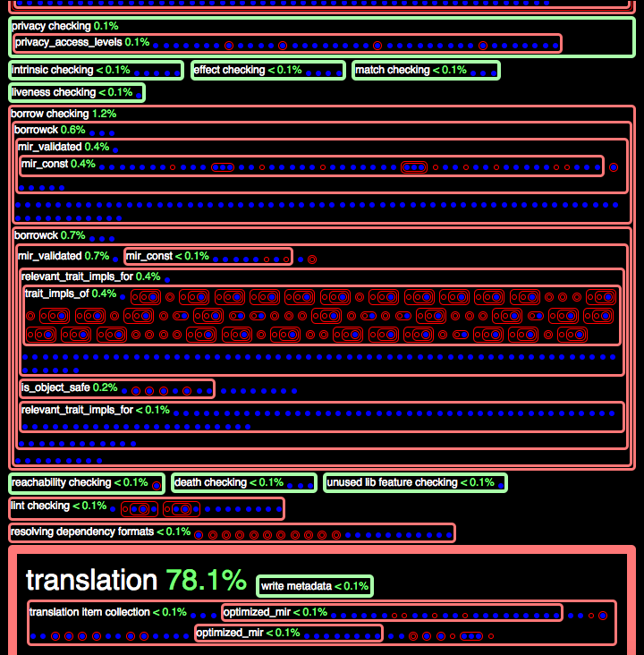

Rust Forge
Welcome to the Rust Forge! Rust Forge serves as a repository of supplementary documentation useful for members of The Rust Programming Language. If you find any mistakes, typos, or want to add to the Rust Forge. Feel free to file an issue or PR on the Rust Forge GitHub.
Current Release Versions
| Channel | Version | Release Date |
|---|---|---|
| Stable | ||
| Beta | ||
| Nightly |
No Tools Breakage Week
To ensure the beta release includes all the tools, no tool breakages are allowed in the week before the beta cutoff (except for nightly-only tools).
| Channel | Version | No Breakage Week |
|---|---|---|
| Beta | ||
| Nightly |
External Links
- Bibliography of research papers and other projects that influenced Rust.
- Rust Pontoon is a translation management system used to localize the Rust website.
Compiler
This section documents the Rust compiler itself, its APIs, and how to contribute and provide bug fixes for the compiler.
External Links
- The Rustc guide documents how the compiler works as well providing helpful information to help get new contributors involved in the development.
- Rustc's internal documentation.
- The Compiler team website is the home for all of the compiler team's planning.
- oli-obk's FIXME page lists all of the
FIXMEcomments in the Rust compiler.
Rustc Bug Fix Procedure
This page defines the best practices procedure for making bug fixes or soundness corrections in the compiler that can cause existing code to stop compiling. This text is based on RFC 1589.
Motivation
From time to time, we encounter the need to make a bug fix, soundness correction, or other change in the compiler which will cause existing code to stop compiling. When this happens, it is important that we handle the change in a way that gives users of Rust a smooth transition. What we want to avoid is that existing programs suddenly stop compiling with opaque error messages: we would prefer to have a gradual period of warnings, with clear guidance as to what the problem is, how to fix it, and why the change was made. This RFC describes the procedure that we have been developing for handling breaking changes that aims to achieve that kind of smooth transition.
One of the key points of this policy is that (a) warnings should be issued initially rather than hard errors if at all possible and (b) every change that causes existing code to stop compiling will have an associated tracking issue. This issue provides a point to collect feedback on the results of that change. Sometimes changes have unexpectedly large consequences or there may be a way to avoid the change that was not considered. In those cases, we may decide to change course and roll back the change, or find another solution (if warnings are being used, this is particularly easy to do).
What qualifies as a bug fix?
Note that this RFC does not try to define when a breaking change is permitted. That is already covered under RFC 1122. This document assumes that the change being made is in accordance with those policies. Here is a summary of the conditions from RFC 1122:
- Soundness changes: Fixes to holes uncovered in the type system.
- Compiler bugs: Places where the compiler is not implementing the specified semantics found in an RFC or lang-team decision.
- Underspecified language semantics: Clarifications to grey areas where the compiler behaves inconsistently and no formal behavior had been previously decided.
Please see the RFC for full details!
Detailed design
The procedure for making a breaking change is as follows (each of these steps is described in more detail below):
- Do a crater run to assess the impact of the change.
- Make a special tracking issue dedicated to the change.
- Do not report an error right away. Instead, issue forwards-compatibility
lint warnings.
- Sometimes this is not straightforward. See the text below for suggestions on different techniques we have employed in the past.
- For cases where warnings are infeasible:
- Report errors, but make every effort to give a targeted error message that directs users to the tracking issue
- Submit PRs to all known affected crates that fix the issue
- or, at minimum, alert the owners of those crates to the problem and direct them to the tracking issue
- Once the change has been in the wild for at least one cycle, we can stabilize the change, converting those warnings into errors.
Finally, for changes to libsyntax that will affect plugins, the general policy is to batch these changes. That is discussed below in more detail.
Tracking issue
Every breaking change should be accompanied by a dedicated tracking issue for that change. The main text of this issue should describe the change being made, with a focus on what users must do to fix their code. The issue should be approachable and practical; it may make sense to direct users to an RFC or some other issue for the full details. The issue also serves as a place where users can comment with questions or other concerns.
A template for these breaking-change tracking issues can be found below. An example of how such an issue should look can be found here.
The issue should be tagged with (at least) B-unstable and T-compiler.
Tracking issue template
This is a template to use for tracking issues:
This is the **summary issue** for the `YOUR_LINT_NAME_HERE`
future-compatibility warning and other related errors. The goal of
this page is describe why this change was made and how you can fix
code that is affected by it. It also provides a place to ask questions
or register a complaint if you feel the change should not be made. For
more information on the policy around future-compatibility warnings,
see our [breaking change policy guidelines][guidelines].
[guidelines]: LINK_TO_THIS_RFC
#### What is the warning for?
*Describe the conditions that trigger the warning and how they can be
fixed. Also explain why the change was made.**
#### When will this warning become a hard error?
At the beginning of each 6-week release cycle, the Rust compiler team
will review the set of outstanding future compatibility warnings and
nominate some of them for **Final Comment Period**. Toward the end of
the cycle, we will review any comments and make a final determination
whether to convert the warning into a hard error or remove it
entirely.
Issuing future compatibility warnings
The best way to handle a breaking change is to begin by issuing future-compatibility warnings. These are a special category of lint warning. Adding a new future-compatibility warning can be done as follows.
# #![allow(unused_variables)] #fn main() { // 1. Define the lint in `src/librustc/lint/builtin.rs`: declare_lint! { pub YOUR_ERROR_HERE, Warn, "illegal use of foo bar baz" } // 2. Add to the list of HardwiredLints in the same file: impl LintPass for HardwiredLints { fn get_lints(&self) -> LintArray { lint_array!( .., YOUR_ERROR_HERE ) } } // 3. Register the lint in `src/librustc_lint/lib.rs`: store.register_future_incompatible(sess, vec![ ..., FutureIncompatibleInfo { id: LintId::of(YOUR_ERROR_HERE), reference: "issue #1234", // your tracking issue here! }, ]); // 4. Report the lint: tcx.lint_node( lint::builtin::YOUR_ERROR_HERE, path_id, binding.span, format!("some helper message here")); #}
Helpful techniques
It can often be challenging to filter out new warnings from older, pre-existing errors. One technique that has been used in the past is to run the older code unchanged and collect the errors it would have reported. You can then issue warnings for any errors you would give which do not appear in that original set. Another option is to abort compilation after the original code completes if errors are reported: then you know that your new code will only execute when there were no errors before.
Crater and crates.io
We should always do a crater run to assess impact. It is polite and considerate to at least notify the authors of affected crates the breaking change. If we can submit PRs to fix the problem, so much the better.
Is it ever acceptable to go directly to issuing errors?
Changes that are believed to have negligible impact can go directly to issuing
an error. One rule of thumb would be to check against crates.io: if fewer than
10 total affected projects are found (not root errors), we can move
straight to an error. In such cases, we should still make the "breaking change"
page as before, and we should ensure that the error directs users to this page.
In other words, everything should be the same except that users are getting an
error, and not a warning. Moreover, we should submit PRs to the affected
projects (ideally before the PR implementing the change lands in rustc).
If the impact is not believed to be negligible (e.g., more than 10 crates are affected), then warnings are required (unless the compiler team agrees to grant a special exemption in some particular case). If implementing warnings is not feasible, then we should make an aggressive strategy of migrating crates before we land the change so as to lower the number of affected crates. Here are some techniques for approaching this scenario:
- Issue warnings for subparts of the problem, and reserve the new errors for the smallest set of cases you can.
- Try to give a very precise error message that suggests how to fix the problem and directs users to the tracking issue.
- It may also make sense to layer the fix:
- First, add warnings where possible and let those land before proceeding to issue errors.
- Work with authors of affected crates to ensure that corrected versions are available before the fix lands, so that downstream users can use them.
Stabilization
After a change is made, we will stabilize the change using the same process that we use for unstable features:
-
After a new release is made, we will go through the outstanding tracking issues corresponding to breaking changes and nominate some of them for final comment period (FCP).
-
The FCP for such issues lasts for one cycle. In the final week or two of the cycle, we will review comments and make a final determination:
- Convert to error: the change should be made into a hard error.
- Revert: we should remove the warning and continue to allow the older code to compile.
- Defer: can't decide yet, wait longer, or try other strategies.
Ideally, breaking changes should have landed on the stable branch of the compiler before they are finalized.
Removing a lint
Once we have decided to make a "future warning" into a hard error, we need a PR
that removes the custom lint. As an example, here are the steps required to
remove the overlapping_inherent_impls compatibility lint. First, convert the
name of the lint to uppercase (OVERLAPPING_INHERENT_IMPLS) ripgrep through the
source for that string. We will basically by converting each place where this
lint name is mentioned (in the compiler, we use the upper-case name, and a macro
automatically generates the lower-case string; so searching for
overlapping_inherent_impls would not find much).
Remove the lint.
The first reference you will likely find is the lint definition in
librustc/lint/builtin.rs that resembles this:
# #![allow(unused_variables)] #fn main() { declare_lint! { pub OVERLAPPING_INHERENT_IMPLS, Deny, // this may also say Warning "two overlapping inherent impls define an item with the same name were erroneously allowed" } #}
This declare_lint! macro creates the relevant data structures. Remove it. You
will also find that there is a mention of OVERLAPPING_INHERENT_IMPLS later in
the file as part of a lint_array!; remove it too,
Next, you see see a reference to OVERLAPPING_INHERENT_IMPLS in
librustc_lint/lib.rs. This defining the lint as a "future
compatibility lint":
# #![allow(unused_variables)] #fn main() { FutureIncompatibleInfo { id: LintId::of(OVERLAPPING_INHERENT_IMPLS), reference: "issue #36889 <https://github.com/rust-lang/rust/issues/36889>", }, #}
Remove this too.
Add the lint to the list of removed lists.
In src/librustc_lint/lib.rs there is a list of "renamed and removed lints".
You can add this lint to the list:
# #![allow(unused_variables)] #fn main() { store.register_removed("overlapping_inherent_impls", "converted into hard error, see #36889"); #}
where #36889 is the tracking issue for your lint.
Update the places that issue the lint
Finally, the last class of references you will see are the places that actually
trigger the lint itself (i.e., what causes the warnings to appear). These
you do not want to delete. Instead, you want to convert them into errors. In
this case, the add_lint call looks like this:
# #![allow(unused_variables)] #fn main() { self.tcx.sess.add_lint(lint::builtin::OVERLAPPING_INHERENT_IMPLS, node_id, self.tcx.span_of_impl(item1).unwrap(), msg); #}
We want to convert this into an error. In some cases, there may be an existing error for this scenario. In others, we will need to allocate a fresh diagnostic code. Instructions for allocating a fresh diagnostic code can be found here. You may want to mention in the extended description that the compiler behavior changed on this point, and include a reference to the tracking issue for the change.
Let's say that we've adopted E0592 as our code. Then we can change the
add_lint() call above to something like:
# #![allow(unused_variables)] #fn main() { struct_span_err!(self.tcx.sess, self.tcx.span_of_impl(item1).unwrap(), msg) .emit(); #}
Update tests
Finally, run the test suite. These should be some tests that used to reference
the overlapping_inherent_impls lint, those will need to be updated. In
general, if the test used to have #[deny(overlapping_inherent_impls)], that
can just be removed.
./x.py test
All done!
Open a PR. =)
Cross Compilation
This subsection documents cross compiling your code on one platform to another.
Windows
- Acquire LLD somehow. Either your distro provides it or you have to build it from source.
- You'll need an lld-link wrapper, which is just lld using the link flavor so it accepts the same flags as link.exe. You may either have a binary called lld-link, or you may have to write some sort of script to wrap lld.
- If you want to be able to cross compile C/C++ as well, you will need to obtain clang-cl, which is clang pretending to be cl.
- You'll need libraries from an existing msvc installation on Windows to link
your Rust code against. You'll need the VC++ libraries from either VS 2015 or
VS 2017, and the system libraries from either the Windows 8.1 or Windows 10
SDK. Here are some approximate paths which may vary depending on the exact
version you have installed. Copy them over to your non-windows machine.
- VS 2015:
C:\Program Files (x86)\Microsoft Visual Studio 14.0\VC\lib - VS 2017:
C:\Program Files (x86)\Microsoft Visual Studio\2017\Community\VC\Tools\MSVC\14.10.24728\lib - Windows 10 SDK:
C:\Program Files (x86)\Windows Kits\10\Lib\10.0.14393.0 - Windows 8.1 SDK:
C:\Program Files (x86)\Windows Kits\8.1\Lib\winv6.3
- VS 2015:
- If you want to cross compile C/C++ you'll also need headers. Replace
libin the above paths withincludeto get the appropriate headers. - Set your LIB and INCLUDE environment variables to semicolon separated lists of all the relevant directories for the correct architecture.
- In your .cargo/config add
[target.x86_64-pc-windows-msvc] linker = "lld-link"or whatever your lld pretending to be link.exe is called. - For cross compiling C/C++, you'll need to get the gcc crate working correctly. I never tested it to cross compile, I have no idea whether it will even do anything sane.
- Install the appropriate target using rustup and pass
--target=x86_64-pc-windows-msvcwhile building. Hopefully it works. If it doesn't, well... I don't know.
Diagnostic Codes
We generally try assign each error message a unique code like E0123. These
codes are defined in the compiler in the diagnostics.rs files found in each
crate, which basically consist of macros. The codes come in two varieties: those
that have an extended write-up, and those that do not. Whenever possible, if you
are making a new code, you should write an extended write-up.
Allocating a fresh code
If you want to create a new error, you first need to find the next available code. This is a bit tricky since the codes are defined in various crates. To do it, run this obscure command:
./x.py test --stage 0 src/tools/tidy
This will invoke the tidy script, which generally checks that your code obeys our coding conventions. One of those jobs is to check that diagnostic codes are indeed unique. Once it is finished with that, tidy will print out the lowest unused code:
...
tidy check (x86_64-apple-darwin)
* 470 error codes
* highest error code: E0591
...
Here we see the highest error code in use is E0591, so we probably want
E0592. To be sure, run rg E0592 and check, you should see no references.
Next, open src/{crate}/diagnostics.rs within the crate where you wish to issue
the error (e.g., src/librustc_typeck/diagnostics.rs). Ideally, you will add
the code (in its proper numerical order) into the register_long_diagnostics!
macro, sort of like this:
# #![allow(unused_variables)] #fn main() { register_long_diagnostics! { ... E0592: r##" Your extended error text goes here! "##, } #}
But you can also add it without an extended description:
# #![allow(unused_variables)] #fn main() { register_diagnostics! { ... E0592, // put a description here } #}
To actually issue the error, you can use the struct_span_err! macro:
# #![allow(unused_variables)] #fn main() { struct_span_err!(self.tcx.sess, // some path to the session here span, // whatever span in the source you want E0592, // your new error code &format!("text of the error")) .emit() // actually issue the error #}
If you want to add notes or other snippets, you can invoke methods before you
call .emit():
# #![allow(unused_variables)] #fn main() { struct_span_err!(...) .span_label(another_span, "something to label in the source") .span_note(another_span, "some separate note, probably avoid these") .emit_() #}
Profiling Queries
In an effort to support incremental compilation, the latest design of the Rust compiler consists of a query-based model.
The details of this model are (currently) outside the scope of this document, however, we explain some background of this model, in an effort to explain how we profile its performance. We intend this profiling effort to address issue 42678.
Quick Start
0. Enable debug assertions
./configure --enable-debug-assertions
1. Compile rustc
Compile the compiler, up to at least stage 1:
python x.py --stage 1
2. Run rustc, with flags
Run the compiler on a source file, supplying two additional debugging flags with
-Z:
rustc -Z profile-queries -Z incremental=cache foo.rs
Regarding the two additional parameters:
-Z profile-queriestells the compiler to run a separate thread that profiles the queries made by the main compiler thread(s).-Z incremental=cachetells the compiler to "cache" various files that describe the compilation dependencies, in the subdirectorycache.
This command will generate the following files:
profile_queries.htmlconsists of an HTML-based representation of the trace of queries.profile_queries.counts.txtconsists of a histogram, where each histogram "bucket" is a query provider.
3. Run rustc, with -Z time-passes:
- This additional flag will add all timed passes to the output files mentioned above, in step 2. As described below, these passes appear visually distinct from the queries in the HTML output (they currently appear as green boxes, via CSS).
4. Inspect the output
- 4(a). Open the HTML file (
profile_queries.html) with a browser. See this section for an explanation of this file. - 4(b). Open the data file (
profile_queries.counts.txt) with a text editor, or spreadsheet. See this section for an explanation of this file.
Interpret the HTML Output
Example 0
The following image gives some example output, from tracing the queries of
hello_world.rs (a single main function, that prints "hello world" via the
macro println!). This image only shows a short prefix of the total output; the
actual output is much longer.
 View full HTML output. Note; it could take up to a second to properly render depending on your browser.
Example 0 explanation
The trace of the queries has a formal structure; see Trace of Queries for details.
We style this formal structure as follows:
- Timed passes: Green boxes, when present (via
-Z time-passes), represent timed passes in the compiler. In future versions, these passes may be replaced by queries, explained below. - Labels: Some green and red boxes are labeled with text. Where they are
present, the labels give the following information:
- The query's provider, sans its key and its result, which are often too long to include in these labels.
- The duration of the provider, as a fraction of the total time (for the entire trace). This fraction includes the query's entire extent (that is, the sum total of all of its sub-queries).
- Query hits: Blue dots represent query hits. They consist of leaves in the
trace's tree. (CSS class:
hit). - Query misses: Red boxes represent query misses. They consist of internal
nodes in the trace's tree. (CSS class:
miss). - Nesting structure: Many red boxes contain nested boxes and dots. This nesting structure reflects that some providers depend on results from other providers, which consist of their nested children.
- Some red boxes are labeled with text, and have highlighted borders (light red, and bolded). (See heuristics for details).
Heuristics
Heuristics-based CSS Classes:
-
important-- Trace nodes areimportantif they have an extent of 6 (or more), or they have a duration fraction of one percent (or more). These numbers are simple heuristics (currently hard-coded, but easy to modify). Important nodes are styled with textual labels, and highlighted borders (light red, and bolded). -
frac-50,-40, ... -- Trace nodes whose total duration (self and children) take a large fraction of the total duration, at or above 50%, 40%, and so on. We style nodes these with larger font and padding.
Interpret the Data Output
The file profile_queries.counts.txt contains a table of information about the
queries, organized around their providers.
For each provider (or timed pass, when -Z time-passes is present), we produce:
-
A total count --- the total number of times this provider was queried
-
A total duration --- the total number of seconds spent running this provider, including all providers it may depend on. To get a sense of this dependency structure, and inspect a more fine-grained view of these durations, see this section.
These rows are sorted by total duration, in descending order.
Counts: Example 0
The following example profile_queries.counts.txt file results from running on
a hello world program (a single main function that uses println to print
`"hellow world").
As explained above, the columns consist of provider/pass, count, duration:
translation,1,0.891
symbol_name,2658,0.733
def_symbol_name,2556,0.268
item_attrs,5566,0.162
type_of,6922,0.117
generics_of,8020,0.084
serialize dep graph,1,0.079
relevant_trait_impls_for,50,0.063
def_span,24875,0.061
expansion,1,0.059
const checking,1,0.055
adt_def,1141,0.048
trait_impls_of,32,0.045
is_copy_raw,47,0.045
is_foreign_item,2638,0.042
fn_sig,2172,0.033
adt_dtorck_constraint,2,0.023
impl_trait_ref,2434,0.023
typeck_tables_of,29,0.022
item-bodies checking,1,0.017
typeck_item_bodies,1,0.017
is_default_impl,2320,0.017
borrow checking,1,0.014
borrowck,4,0.014
mir_validated,4,0.013
adt_destructor,10,0.012
layout_raw,258,0.010
load_dep_graph,1,0.007
item-types checking,1,0.005
mir_const,2,0.005
name resolution,1,0.004
is_object_safe,35,0.003
is_sized_raw,89,0.003
parsing,1,0.003
is_freeze_raw,11,0.001
privacy checking,1,0.001
privacy_access_levels,5,0.001
resolving dependency formats,1,0.001
adt_sized_constraint,9,0.001
wf checking,1,0.001
liveness checking,1,0.001
compute_incremental_hashes_map,1,0.001
match checking,1,0.001
type collecting,1,0.001
param_env,31,0.000
effect checking,1,0.000
trait_def,140,0.000
lowering ast -> hir,1,0.000
predicates_of,70,0.000
extern_crate,319,0.000
lifetime resolution,1,0.000
is_const_fn,6,0.000
intrinsic checking,1,0.000
translation item collection,1,0.000
impl_polarity,15,0.000
creating allocators,1,0.000
language item collection,1,0.000
crate injection,1,0.000
early lint checks,1,0.000
indexing hir,1,0.000
maybe creating a macro crate,1,0.000
coherence checking,1,0.000
optimized_mir,6,0.000
is_panic_runtime,33,0.000
associated_item_def_ids,7,0.000
needs_drop_raw,10,0.000
lint checking,1,0.000
complete gated feature checking,1,0.000
stability index,1,0.000
region_maps,11,0.000
super_predicates_of,8,0.000
coherent_trait,2,0.000
AST validation,1,0.000
loop checking,1,0.000
static item recursion checking,1,0.000
variances_of,11,0.000
associated_item,5,0.000
plugin loading,1,0.000
looking for plugin registrar,1,0.000
stability checking,1,0.000
describe_def,15,0.000
variance testing,1,0.000
codegen unit partitioning,1,0.000
looking for entry point,1,0.000
checking for inline asm in case the target doesn't support it,1,0.000
inherent_impls,1,0.000
crate_inherent_impls,1,0.000
trait_of_item,7,0.000
crate_inherent_impls_overlap_check,1,0.000
attribute checking,1,0.000
internalize symbols,1,0.000
impl wf inference,1,0.000
death checking,1,0.000
reachability checking,1,0.000
reachable_set,1,0.000
is_exported_symbol,3,0.000
is_mir_available,2,0.000
unused lib feature checking,1,0.000
maybe building test harness,1,0.000
recursion limit,1,0.000
write allocator module,1,0.000
assert dep graph,1,0.000
plugin registration,1,0.000
write metadata,1,0.000
Background
We give some background about the query model of the Rust compiler.
Def IDs
In the query model, many queries have a key that consists of a Def ID. The Rust compiler uses Def IDs to distinguish definitions in the input Rust program.
From the compiler source code (src/librustc/hir/def_id.rs):
/// A DefId identifies a particular *definition*, by combining a crate
/// index and a def index.
#[derive(Clone, Eq, Ord, PartialOrd, PartialEq, RustcEncodable, RustcDecodable, Hash, Copy)]
pub struct DefId {
pub krate: CrateNum,
pub index: DefIndex,
}
Queries
A query relates a key to a result, either by invoking a provider that computes this result, or by reusing a cached result that was provided earlier. We explain each term in more detail:
- Query Provider: Each kind of query has a pre-defined provider, which
refers to the compiler behavior that provides an answer to the query. These
providers may nest; see trace of queries for more
information about this nesting structure.
Example providers:
typeck_tables_of-- Typecheck a Def ID; produce "tables" of type information.borrowck-- Borrow-check a Def ID.optimized_mir-- Generate an optimized MIR for a Def ID; produce MIR.- For more examples, see Example 0.
- Query Key: The input/arguments to the provider. Often, this consists of a particular Def ID.
- Query Result: The output of the provider.
Trace of Queries
Formally, a trace of the queries consists of a tree, where sub-trees represent sub-traces. In particular, the nesting structure of the trace of queries describes how the queries depend on one another.
Even more precisely, this tree represents a directed acyclic graph (DAG), where shared sub-graphs consist of tree nodes that occur multiple times in the tree, first as "cache misses" and later as "cache hits".
Cache hits and misses. The trace is a tree with the following possible tree nodes:
- Query, with cache miss: The query's result is unknown, and its provider runs to compute it. In this case, the dynamic extent of the query's trace consists of the traced behavior of its provider.
- Query, with cache hit: The query's result is known, and is reused; its provider does not rerun. These nodes are leaves in the trace, since they have no dynamic extent. These leaves also represent where the tree, represented as a DAG, would share a sub-graph (namely, the sub-graph of the query that was reused from the cache).
Tree node metrics. To help determine how to style this tree, we define the following tree node metrics:
- Depth: The number of ancestors of the node in its path from the tree root.
- Extent: The number of immediate children of the node.
Intuitively, a dependency tree is "good" for incremental caching when the depth and extent of each node is relatively small. It is pathological when either of these metrics grows too large. For instance, a tree node whose extent consists of 1M immediate children means that if and when this node is re-computed, all 1M children must be re-queried, at the very least (some may also require recomputation, too).
External Links
Related design ideas, and tracking issues:
- Design document: On-demand Rustc incremental design doc
- Tracking Issue: "Red/Green" dependency tracking in compiler
More discussion and issues:
Compiler-team Triage Meeting
What is it?
The triage meeting is a weekly meeting where we go over the open issues, look at regressions, consider beta backports, and other such business. In the tail end of the meeting, we also do brief check-ins with active working groups to get an idea what they've been working on.
When and where is it?
See the compiler team meeting calendar for the canonical date and time. The meetings take place in the #t-compiler stream on the rust-lang Zulip.
Where can I lean more?
The meeting procedure is documented in rust-lang/rust#54818.
The working group check-in schedule is available on the compiler-team website.
Compiler-team Steering Meeting
What is it?
The "steering meeting" is a weekly meeting dedicated to planning and high-level discussion. The meeting operates on a repeating schedule:
- Week 1: Planning
- Week 2: Technical or non-technical discussion
- Week 3: Technical or non-technical discussion
- Week 4: Non-technical discussion
The first meeting of the 4-week cycle is used for planning. The primary purpose of this meeting is to select the topics for the next three meetings. The topics are selected from a set of topic proposals, which must be uploaded and available for perusal before the meeting starts. The planning meeting is also an opportunity to check on the "overall balance" of our priorities.
The remaining meetings are used for design or general discussion. Weeks 2 and 3 can be used for technical or non-technical discussion; it is also possible to use both weeks to discuss the same topic, if that topic is complex. Week 4 is reserved for non-technical topics, so as to ensure that we are keeping an eye on the overall health and functioning of the team.
Announcing the schedule
After each planning meeting, the topics for the next three weeks are added to the compiler-team meeting calendar and a blog post is posted to the Inside Rust blog.
When and where is it?
See the compiler team meeting calendar for the canonical date and time. The meetings take place in the #t-compiler stream on the [rust-lang Zulip][z].
Submitting a proposal
If you would like to submit a proposal to the steering meeting for group discusison, read on! This page has all the details.
TL;DR
In short, all you have to do is
- open an issue on the compiler-team repository
- use the template for meeting proposals
- you only need a few sentences to start, but by the time the meeting takes place we typically expect a more detailed writeup, e.g. using [this template](
You don't have to have a lot of details to start: just a few sentences is enough. But, especially for technical design discussions, we will typically expect that some form of more detailed overview be made available by the time the meeting takes place.
Examples of good candidates for discussing at the steering meeting
Here are some examples of possible technical topics that would be suitable for the steering meeting:
- A working group has an idea to refactor the HIR to make some part of their job easier. They have sketched out a proposal and would like feedback.
- Someone has encountered a problem that is really hard to solve with the existing data structures. They would like feedback on a good solution to their problem.
- Someone has done major refactoring work on a PR and they would like to be able to explain the work they did and request review.
Steering meetings are also a good place to discuss other kinds of proposals:
- A proposal to move some part of the compiler into an out-of-tree crate.
- A proposal to start a new working group.
Note that a steering meeting is not required to create a new working group or an out-of-tree crate, but it can be useful if the proposal is complex or controversial, and you would like a dedicated time to talk out the plans in more detail.
Criteria for selection
When deciding the topics for upcoming meetings, we must balance a number of things:
- We don't want to spend time on design work unless there are known people who will implement it and support it; this includes not only the "main coder" but also a suitable reviewer.
- We don't want to take on "too many" tasks at once, even if there are people to implement them.
- We also don't want to have active projects that will be "stepping on each others' toes", changing the same set of code in deep ways.
Meetings are not mandatory
It is perfectly acceptable to choose not to schedule a particular slot. This could happen if (e.g.) there are no proposals available or if nothing seems important enough to discuss at this moment. Note that, to keep the "time expectations" under control, we should generally stick to the same 4-week cycle and simply opt to skip meetings, rather than (e.g.) planning things at the last minute.
Adding a proposal
Proposals can be added by opening an issue on the compiler-team repository. There is an issue template for meeting proposals that gives directions. The basic idea is that you open an issue with a few sentences describing what you would like to talk about.
Some details that might be useful to include:
- how complex of a topic you think this is
- people in the compiler team that you think should be present for the meeting
Expectations for the meeting
By the time the meeting takes place, we generally would prefer to have a more detailed write-up or proposal. You can find a template for such a proposal here. This should be created in the form of a hackmd document -- usually we will then update this document with the minutes and consensus from the meeting. The final notes are then stored in the [minutes] directory of the compiler-team repository.
Expectations for a non-technical proposal
The requirements for non-technical proposals are somewhat looser. A few sentences or paragraphs may well suffice, if it is sufficient to understand the aims of the discussion.
Frequently asked questions
What happens if there are not enough proposals? As noted above, meetings are not mandatory. If there aren't enough proposals in some particular iteration, then we can just opt to not discuss anything.
How to run the planning meeting
Week of the meeting
- Announce the meeting in the triage meeting
- Skim over the list of proposals and ping people who have open proposals to get their availability over the next few weeks
Day of the meeting
- Create a
design meeting YYYY.MM.DDtopic- Ping
@t-compiler/meeting, ideally 1h or so before the meeting actually starts, to remind people
- Ping
- At the time of the meeting, return to the topic
- Ping
@t-compiler/meetingto let people know the meeting is starting
- Ping
- We typically begin with a 5min announcement period
- Visit the compiler-team repository to get a list of proposed meetings
To actually make the final selection, we recommend
- First, try to identify topics that are clear non-candidates
- for example, sometimes more investigative work (e.g., data gathering) is needed
- try to identify people to do those tasks
- other issues may be out of date, or clear non-starters, and they can be closed
- Next tackle technical design meetings, then non-technical
- Typical ratio is 2 technical, 1 non-technical, but this is not set in stone
- It's ok to have fewer than 3 meetings
Announce the meetings
For each scheduled meeting, create a calendar event:
- invite key participants to the meeting
- set the location to
#t-compiler, Zulip - include a link to the design meeting issue in the event
In the relevant issues, add the meeting-scheduled label and add a
message like:
In today's [planning meeting], we decided to schedule this meeting for **DATE**.
[Calendar event]
[planning meeting]: XXX link to Zulip topic
[Calendar event]: XXX link to calendar event
You can get the link to the calendar event by clicking on the event in google calendar and selecting "publish".
Publish a blog post
Add a blog post to the Inside Rust blog using the template found on the compiler-team repository.
How to run the design meeting
Week of the meeting
- Announce the meeting in the triage meeting
- Skim over the list of proposals and ping people who have open proposals to get their availability over the next few weeks
- Make sure that a write-up is available and nag the meeting person otherwise
Day of the meeting
- Create a
design meeting YYYY.MM.DDtopic- Ping
@t-compiler/meeting, ideally 1h or so before the meeting actually starts, to remind people - Include a link to the design meeting write-up
- Ping
- At the time of the meeting, return to the topic
- Ping
@t-compiler/meetingto let people know the meeting is starting - Include a link to the design meeting write-up
- Ping
- We typically begin with a 5min announcement period
To guide the meeting, create a shared hackmd document everyone can view (or adapt an existing one, if there is a write-up). Use this to help structure the meeting, document consensus, and take live notes. Try to ensure that the meeting ends with sort of consensus statement, even if that consensus is just "here are the problems, here is a space of solutions and their pros/cons, but we don't have consensus on which solution to take".
After the meeting
- Post the final contents of the summary hackmd as minutes to the
minutes/design-meetingdirectory in the compiler-team repository - (Optional) create a Inside Rust blog post pointing people at the minutes and maybe giving a few notes
Infrastructure
This section documents Rust's infrastructure, and how it is maintained.
External Links
- rust-toolstate records build and test status of external tools bundled with the Rust repository.
Other Rust Installation Methods
Which installer should you use?
Rust runs on many platforms, and there are many ways to install Rust. If you want to install Rust in the most straightforward, recommended way, then follow the instructions on the main installation page.
That page describes installation via rustup, a tool that manages multiple
Rust toolchains in a consistent way across all platforms Rust supports. Why
might one not want to install using those instructions?
- Offline installation.
rustupdownloads components from the internet on demand. If you need to install Rust without access to the internet,rustupis not suitable. - Preference for the system package manager. On Linux in particular, but also on macOS with Homebrew, and Windows with Chocolatey or Scoop, developers sometimes prefer to install Rust with their platform's package manager.
- Preference against
curl | sh. On Unix, we usually installrustupby running a shell script viacurl. Some have concerns about the security of this arrangement and would prefer to download and run the installer themselves. - Validating signatures. Although
rustupperforms its downloads over HTTPS, the only way to verify the signatures of Rust installers today is to do so manually with the standalone installers. - GUI installation and integration with "Add/Remove Programs" on Windows.
rustupruns in the console and does not register its installation like typical Windows programs. If you prefer a more typical GUI installation on Windows there are standalone.msiinstallers. In the futurerustupwill also have a GUI installer on Windows.
Rust's platform support is defined in three tiers, which correspond closely
with the installation methods available: in general, the Rust project provides
binary builds for all tier 1 and tier 2 platforms, and they are all installable
via rustup. Some tier 2 platforms though have only the standard library
available, not the compiler itself; that is, they are cross-compilation targets
only; Rust code can run on those platforms, but they do not run the compiler
itself. Such targets can be installed with the rustup target add command.
Other ways to install rustup
The way to install rustup differs by platform:
- On Unix, run
curl https://sh.rustup.rs -sSf | shin your shell. This downloads and runsrustup-init.sh, which in turn downloads and runs the correct version of therustup-initexecutable for your platform. - On Windows, download and run
rustup-init.exe.
rustup-init can be configured interactively, and all options can additionally
be controlled by command-line arguments, which can be passed through the shell
script. Pass --help to rustup-init as follows to display the arguments
rustup-init accepts:
curl https://sh.rustup.rs -sSf | sh -s -- --help
If you prefer not to use the shell script, you may directly download
rustup-init for the platform of your choice:
- aarch64-linux-android
- aarch64-unknown-linux-gnu
- arm-linux-androideabi
- arm-unknown-linux-gnueabi
- arm-unknown-linux-gnueabihf
- armv7-linux-androideabi
- armv7-unknown-linux-gnueabihf
- i686-apple-darwin
- i686-linux-android
- i686-pc-windows-gnu
- i686-pc-windows-msvc
- i686-unknown-linux-gnu
- mips-unknown-linux-gnu
- mips64-unknown-linux-gnuabi64
- mips64el-unknown-linux-gnuabi64
- mipsel-unknown-linux-gnu
- powerpc-unknown-linux-gnu
- powerpc64-unknown-linux-gnu
- powerpc64le-unknown-linux-gnu
- s390x-unknown-linux-gnu
- x86_64-apple-darwin
- x86_64-linux-android
- x86_64-pc-windows-gnu
- x86_64-pc-windows-msvc
- x86_64-unknown-freebsd
- x86_64-unknown-linux-gnu
- x86_64-unknown-linux-musl
- x86_64-unknown-netbsd
Standalone installers
The official Rust standalone installers contain a single release of Rust, and
are suitable for offline installation. They come in three forms: tarballs
(extension .tar.gz), that work in any Unix-like environment, Windows
installers (.msi), and Mac installers (.pkg). These installers come with
rustc, cargo, rustdoc, the standard library, and the standard
documentation, but do not provide access to additional cross-targets like
rustup does.
The most common reasons to use these are:
- Offline installation
- Prefering a more platform-integrated, graphical installer on Windows
Each of these binaries is signed with the Rust signing key, which is
available on keybase.io, by the Rust build infrastructure, with GPG. In the
tables below, the .asc files are the signatures.
Source code
| Channel | Binaries + Signatures |
|---|---|
| stable (1.38.0) | tar.gz tar.gz.asc |
| beta | tar.gz tar.gz.asc |
| nightly | tar.gz tar.gz.asc |
The Rust Release Channel Layout
NOTE This document should be considered incomplete and descriptive rather than normative. Do not rely on anything described herein to be fully correct or a definition of how things should be done.
A lot of the content herein is derived from a posting made to the Rust internals forum by Brian Anderson back in 2016.
Rust releases are deployed onto static.rust-lang.org where they are served via
https. There are several parts to a release channel (stable, beta,
nightly) but they all key off a manifest file and then go from there.
Channel manifests
There is a top level directory /dist/ which contains the channel manifests.
The manifests are named channel-rust-[channelname].toml. Each channel manifest
is accompanied by a .sha256 file which is a checksum of the manifest file and
can be used to check integrity of the downloaded data. In addition each
channel's manifest is also accompanied by a .asc file which is a detached GPG
signature which can be used to check not only the integrity but also the
authenticity of the channel manifest.
In addition to the stable, beta, and nightly channels, there is also a
manifest for each release which will be called channel-rust-x.yy.z.toml with
its associated .sha256 and .asc files.
To support date-based channels, there is an archive folder for each day
(labelled YYYY-MM-DD) which contains copies of the requisite channel files on
that day. So, for example, if you installed nightly-2019-02-16 then the
channel file would be
https://static.rust-lang.org/dist/2019-02-16/channel-rust-nightly.toml.
Content of channel manifests
Channel manifests are toml files. These are known as v2 manifests. The v1
manifests are simply lists of the files associated with a release and are not
generated for every channel all of the time. Currently it is recommended to work
only with the v2 manifests and these are the topic of this section.
The top level of the .toml file consists of two important key/value pairs.
Firstly the manifest-version which is, at this time, "2", and secondly the
date of the manifest (date) whose value is of the form "YYYY-MM-DD".
There are then a number of top level sections (tables) which are:
-
pkg- This contains the bulk of the manifest and lists the packages which are part of the release. Typically this will be things likerust,rustc,cargoetc. Therustpackage is semi-special and currently is used to specify the subset of other packages which will be installed by default.Within packages are
componentsandextensions. Currentlycomponentsare installed by default byrustup,extensionsare optional components and are available viarustup component addand friends. -
renames- This contains a set of package renames which can be used to determine the correct package to fetch when the user enters an alias for it.Typically renames are used when a package leaves its preview state and is considered to be release quality. For example, the actual package for
rustfmtis calledrustfmt-previewbut since its release there has been arenames.rustfmttable whosetofield isrustfmt-preview. When the user runsrustup component add rustfmtthe name is automatically translated torustfmt-previewand when the user runsrustup component listthenrustfmt-previewis automatically renamed back torustfmtfor display to the user. -
profiles- This is part of the future setup for deciding the default component set to install. Instead of choosing thecomponentsofpkg.rustinsteadrustupwill honour one of the entries in theprofilestable. Usually this will be thedefaultentry which essentially (though not exactly) boils down to["rustc", "cargo", "rust-std", "rust-docs", "rustfmt", "clippy"].Other profiles include
minimal(["rustc", "cargo", "rust-std"]) andcompletewhich adds in additional tools such as therls, a copy of the standard library source (rust-src),miri,lldb,llvm-tools, andrust-analysis.
Package entries in the channel manifest
As stated above, packages list their components and extensions (mostly just the
rust package) and they can provide per-target tarball and sha256 data.
For example, a package might be:
[pkg.cargo.target.powerpc64-unknown-linux-gnu]
available = true
url = "https://static.rust-lang.org/dist/2019-05-23/cargo-0.36.0-powerpc64-unknown-linux-gnu.tar.gz"
hash = "279f3a84f40e3547a8532c64643f38068accb91c21f04cd16e46579c893f5a06"
xz_url = "https://static.rust-lang.org/dist/2019-05-23/cargo-0.36.0-powerpc64-unknown-linux-gnu.tar.xz"
xz_hash = "cf93b387508f4aea4e64f8b4887d70cc07a00906b981dc0c143e92e918682e4a"
Here you can see that this is for the cargo package, and for the
powerpc64-unknown-linux-gnu target. The url/hash combo is for a .tar.gz
and the xz_url/xz_hash pair for the same tarball compressed with xz.
Either pair of url and hash could be present, both may be present, but it is not
useful for neither to be present unless available is set to false to
indicate that that particular combiantion of package and target is unavailable
in this channel at this time.
In addition, there will be a single entry providing the version for a package in the form:
[pkg.cargo]
version = "0.36.0 (6f3e9c367 2019-04-04)"
Here version will be effectively the $tool --version output, minus the
tool's name.
Targets
Targets are the same triples you might use when building something with
cargo build --target=$target and you can add them to your installation using
rustup target add $target. When you do that, what rustup actually does is to
find the rust-std package for the target in question and installs that.
Essentially like an imaginary rustup component add rust-std.$target.
If a rust-std package for a target is not available = true then that target
cannot be installed via rustup. This can happen for lower tier targets from
time to time.
Since components and extensions are target-specific in the pkg tables, you
will be able to see that rust-std for every target is specified in every
rust target's extensions. This allows for cross-compilation by installation of
any rust-std on any build system.
Service Infrastructure
Most services in the Rust Infrastructure are deployed via rust-central-station. Questions about infrastructure, including current status, should go to the #infra Discord channel.
Our stability guarantees: many of our services rely on publicly-accessible
storage and APIs, but not all of these are intended for public consumption. At
the moment, only the resources behind static.rust-lang.org are considered
stable, meaning that those resources will not change without (at least) prior
notice. If you are relying on other parts of the Rust project infrastructure for
your own work, please let the infrastructure team know.
Highfive
Highfive is a bot (bot user account) which welcomes newcomers and assigns reviewers.
Rust Log Analyzer
The Rust Log Analyzer analyzes CI build logs to extract error messages and posts them to the pull request. It is run by TimNN.
Homu / bors
Homu is a bot which manages pull requests. It is often referred to as "bors" due to the name of its bot user account. Approved pull requests are placed in a queue from which tests are run.
Documentation on homu commands can be found here.
Please contact Alex Crichton if something goes wrong with the bot.
rfcbot
rfcbot is a bot (bot user account) which helps manage async decision making on issues and PRs (typically RFCs). Team members can view any pending requests for review on the FCP dashboard.
Documentation on rfcbot commands can be found in the rfcbot repository.
rustbot
rustbot is a bot (bot user account) to assist with managing issues and PRs to allow users to label and assign without GitHub permissions. See the wiki for more information.
DXR
DXR is a cross-referenced source index for Rust, allowing the Rust source tree to be navigated and searched with ease. It is generated by rust-dxr
perf / rust-timer
perf offers information
about the performance of rustc over time, and a bot for on-demand benchmarking.
It is split into a data collector and a web frontend + bot. The raw performance data is available here and can be browsed on the perf website.
One-off performance runs can done by addressing the rust-timer bot (bot user account). You can trigger the necessary try-build and queue a perf run by saying
@bors try @rust-timer queue
(Technically, the requirement is that the queue command finishes executing prior
to the try build completing successfully.)
Rust Playground
Rust Playground allows you to experiment with Rust before you install it locally, or in any other case where you might not have the compiler available. The Rust playground can be accessed here.
Crater
Crater is a tool to run experiments across the whole Rust ecosystem. Its primary purpose is to detect regressions in the Rust compiler, and it does this by building large number of crates, running their test suites and comparing the results between two versions of the Rust compiler.
docs.rs
docs.rs builds and serves the rustdoc documentation for all crates on crates.io. Issues may be filed on the docs.rs repository. See the #docs-rs channel on Discord for discussion or urgent issues.
Toolstate
The state of tools included with Rust are tracked on the toolstate page. When each PR is merged via CI, the status of each tool is recorded in a JSON file and stored in the toolstate repo. For further information, see the toolstate system documentation.
Rustup components history
The rustup components history tracks the status of every rustup component for every platform over time. See the repository for more information.
CI Timing Tracker
The CI Timing Tracker tracks and compares how long CI jobs take over time. It is run by Alex Crichton.
Team Maintenance
The roster of the Rust teams is always in flux. From time to time, new people are added, but also people sometimes opt to into "alumni status", meaning that they are not currently an active part of the decision-making process. Unfortunately, whenever a new person is added or someone goes into alumni status, there are a number of disparate places that need to be updated. This page aims to document that list. If you have any questions, or need someone with more privileges to make a change for you, a good place to ask is #rust-infra (or possibly #rust-internals).
R+ rights
If just giving r+ rights, the following places need to be modified:
Full team membership
To make a full team member, the following places need to be modified:
- the team roster page
- the rust-lang/TEAM and (in some cases) rust-lang-nursery/TEAM teams on github must be updated
- rfcbot has a separate list of people on a team that is maintained in a configuration file
- the easydns service has an e-mail alias (
compiler-team@rust-lang.org) that needs to be updated- best here is to ask around in #rust-infra
- the internals discussion board has per-team groups
- the list of reviewers highfive uses is set in nrc/highfive
- the configs are set per-repo; some teams are listed in
rust.json, whereas those that span multiple repos are set in_global.json
- the configs are set per-repo; some teams are listed in
Team member departure
Remove the team member from any and all places:
- highfive
- reviewers list
- rfcbot (example)
- 1password
- The GitHub team, GitHub nursery team
- email aliases (as above)
- team roster page
Handling of tools embedded in the rustc repo ("toolstate")
The Rust repository contains several external tools and documents as git submodules (e.g. clippy, rls, the Book, the Reference). Many of those are very tightly coupled to the compiler and depend on internal APIs that change all the time, but they are not actually essential to get the compiler itself to work. To make API changes less painful, these tools are allowed to "break" temporarily. PRs can still land and nightlies still get released even when some tools are broken. Their current status is managed by the toolstate system. (Cargo is not subject to the toolstate system and instead just has to always work.)
The three possible states of a "tool" (this includes the documentation managed
by the toolstate system, where we run doctests) are: test-pass, test-fail,
build-fail.
This page gives a rough overview how the toolstate system works, and what the rules are for when which tools are (not) allowed to break.
Toolstate Rules
-
For all tools, if a PR changes that tool (if it changes the commit used by the submodule), the tool has to be in
test-passafter this PR or else CI will fail. -
For all tools except for "nightly only" tools, the following extra rules are applied:
- If a PR lands on the
betaorstablebranch, the tool has to betest-pass. - If a PR lands on
masterin the week before the beta is cut, and that PR regresses the tool (if it makes the state "worse"), CI fails. This is to help make sure all these tools becometest-passso that a beta can be cut. (See the Forge index for when the next beta cutoff is happening.)
At the time of writing, the following tools are "nightly only": rustc-guide, miri, embedded-book.
- If a PR lands on the
Updating the toolstate repository
Updating the toolstate repository happens in two steps: when CI
runs on the auto branch (where bors moves a PR to test if it is good for
integration), the "tool" runners for the individual platforms (at the time of
writing, Linux and Windows) each submit a JSON file to the repository recording
the state of each tool for the commit they are testing. Later, if that commit
actually entirely passed CI and bors moves it to the master branch, the
"current tool status" in the toolstate repository is updated appropriately.
These scripts also automatically ping some people and create issues when tools break.
For further details, see the comments in the involved files: checktools.sh,
publish_toolstate.py as well as the other files mentioned there.
Adding a tool
To add a new tool to be tracked, the following steps must be taken:
- Create a PR to rust-lang/rust that adds the submodule along with any
necessary build system / bootstrap updates. Be careful that the tests
properly support
./x.py --no-fail-fastto avoid issues like this. - Include changes to
checktools.sh:- Build the tool at the top. This is the step that actually generates the
JSON status for the tool. When
save-toolstatesis set inconfig.toml, the rust build system will write a JSON file with the status of each test. - Add the tool to
status_checkwith whether it should be a beta blocker or not.
- Build the tool at the top. This is the step that actually generates the
JSON status for the tool. When
- Update
publish_toolstate.pyto add the tool. This includes a list of people to ping if the tool is broken, and its source repo. (Note: At the time of this writing, these users must have permissions to be assignable on rust-lang/rust GitHub.) - Submit a PR to the toolstate repository to manually add the tool to the
latest.jsonfile.
Policies of the infrastructure team
This section documents the policies created by the infrastructure team.
Policy on broken nightlies
Sometimes the nightlies released automatically by our CI ends up being broken for some people or even everyone. This policy defines what the infra team response will be in those cases.
Which nightly will be rolled back
A nightly can only be rolled back in the following cases:
- If it contains destructive code, for example if the included compiler deletes all the users files.
- If an infra problem caused it to be broken for a big percentage of users on any Tier 1 platform. Issues affecting only lower tier platforms are not worthy of a roll back, since we don't guarantee working builds for those platforms anyway.
A nightly will not be rolled back if it's broken by a critical compiler bug: those bugs are supposed to be caught by CI, and nightly can have compiler regressions anyway. There are no exceptions, even if big projects are broken because of this.
What are we going to fix
Once any member of the infra team decides to roll back a nightly under this policy we will roll back to the most recent working nightly. The roll back has to fix installing the nightly with rustup:
$ rustup toolchain install nightly
It's not required to roll back other things like the documentation or the
manually downloadable artifacts. After the nightly is rolled back we have to
announce the roll back on the @rustlang twitter account and on the status
page.
Infrastructure guidelines
This section contains the guidelines written by the infrastructure team for other teams who want to use the project's infrastructure.
Rust Infrastructure hosting for static websites
The Rust Infrastructure team provides hosting for static websites available for all Rust teams. This document explains the requirements a website needs to meet and how to setup one.
Requirements for hosting websites
- The website must be managed by a Rust team, or be officially affiliated with
the project.
The infrastructure team has finite resources and we can't offer hosting for community projects. - The websites content and build tooling must be hosted on a GitHub
repository in either the rust-lang or
rust-lang-nursery organizations.
The infrastructure team must be able to rebuild the website content at any time (for example if we need to switch hosting), and having it hosted on a GitHub repository inside infra-managed organizations is the best way for us to ensure that. Even though we'd prefer for all the repositories to be public it's not a requirement. - The website must be built and deployed with a CI service.
We have custom tooling built around hosting static websites on our infra, and at the moment they work with Travis CI and Azure Pipelines. If you need different CI services ask us in advance and we'll adapt the tooling to your provider of choice. - The website must reach an A+ grade on the
Mozilla Observatory.
Browsers have multiple security features toggleable only through HTTP response headers, and those features enhance users' privacy and prevent exploits from working. An A+ grade on the Observatory indicates all the important headers are correctly set. - The website must be hosted on platforms vetted by the infra team.
We recommend either GitHub Pages or Amazon S3 (in the rust-lang AWS account) as the hosting and CloudFront as the CDN, but if you need other platforms that's good as long as we consider them secure and reliable.
Static websites configuration
To avoid limitations of some hosting providers we have setup CloudFront to
enable additional, custom behaviors. These behaviors are configured through a
file named website_config.json at the root of the generated website content.
Adding custom headers
One of the requirements for having a static website hosted by the
infrastructure team is to reach an A+ grade on the Mozilla
Observatory, and that requires custom
headers to be set. To setup custom headers you need to add an headers section
to website_config.json. This example content includes all the headers
needed to reach grade B on the Observatory (to reach grade A+ a Content
Security Policy is required):
{
"headers": {
"Strict-Transport-Security": "max-age=63072000",
"X-Content-Type-Options": "nosniff",
"X-Frame-Options": "DENY",
"X-XSS-Protection": "1; mode=block",
"Referrer-Policy": "no-referrer, strict-origin-when-cross-origin"
}
}
Fixing GitHub Pages redirects
GitHub Pages behaves weirdly when it sits behind CloudFront and it needs to
issue redirects: since it doesn't know the real domain name it will use
http://org-name.github.io/repo-name as the base of the redirect instead of
the correct protocol and domain. To prevent this behavior the
github_pages_origin key needs to be added to website_config.json
with the origin base url as the value (excluding the protocol):
{
"github_pages_origin": "org-name.github.io/repo-name"
}
Deployment guide
These deployments steps are meant to be executed by a member of the infrastructure team since they require access to our AWS account.
Configuring AWS
Create a CloudFront web distribution and set the following properties:
- Origin Domain Name: rust-lang.github.io/repo-name
- Origin Protocol Policy: HTTPS Only
- Viewer Protocol Policy: Redirect HTTP to HTTPS
- Lambda Function Association:
- Viewer Response: arn:aws:lambda:us-east-1:890664054962:function:static-websites:4
- Alternate Domain Names: your-subdomain-name.rust-lang.org
- SSL Certificate: Custom SSL Certificate
- You will need to request the certificate for that subdomain name through ACM (please use the DNS challenge to validate the certificate)
- Comment: your-subdomain-name.rust-lang.org
Wait until the distribution is propagated and take note of its
.cloudfront.net domain name.
Head over to the domains Route 53 hosted zone and create a new record set:
- Name: your-subdomain-name
- Type: CNAME
- Value: the
.cloudfront.netdomain name you saw earlier
Create an AWS IAM user to allow the CI provider used to deploy website changes
to perform whitelisted automatic actions. Use ci--ORG-NAME--REPO-NAME (for
example ci--rust-lang--rust) as the user name, allow programmatic access to
it and add it to the ci-static-websites IAM group. Then take note of the
access key id and the secret access key since youll need those later.
Adding deploy keys
To deploy websites we dont use GitHub tokens (since they dont have granular access scoping) but a deploy key with write access unique for each repository. To setup the deploy key you need to be an administrator on the repository, clone the simpleinfra repository and run this command:
$ cargo run --bin setup-deploy-keys rust-lang/repo-name
The command requires the GITHUB_TOKEN (you can generate one
here) and the TRAVIS_TOKEN (you can see
yours here) to be present. It will
generate a brand new key, upload it to GitHub and configure Travis CI to use
it if the repo is active there.
Configuring Travis CI
To actually deploy the website, this snippet needs to be added to your
.travis.yml (please replace the contents of RUSTINFRA_DEPLOY_DIR and
RUSTINFRA_CLOUDFRONT_DISTRIBUTION):
env:
RUSTINFRA_DEPLOY_DIR: path/to/be/deployed
RUSTINFRA_CLOUDFRONT_DISTRIBUTION: ABCDEFGHIJKLMN
import:
- rust-lang/simpleinfra/travis-configs/static-websites.yml
You will also need to set the contents of the AWS_ACCESS_KEY_ID and
AWS_SECRET_ACCESS_KEY environment variables on the Travis CI web UI with the
credentials of the IAM user you created earlier. The secret access key must
be hidden from the build log, while the access key id should be publicly
visible.
Configuring Azure Pipelines
To actually deploy the website, this snippet needs to be added at the top of your pipeline's YAML file:
resources:
repositories:
- repository: rustinfra
type: github
name: rust-lang/simpleinfra
endpoint: rust-lang
Then you can add this steps when you want to execute the deploy (please replace
the contents of deploy_dir and cloudfront_distribution):
- template: azure-configs/static-websites.yml@rustinfra
parameters:
deploy_dir: path/to/output
# Optional, only needed if GitHub pages is behind CloudFront
cloudfront_distribution: AAAAAAAAAAAAAA
You will also need to set the following environment variables in the pipeline:
GITHUB_DEPLOY_KEY: value outputted when adding the deploy key earlier (secret)AWS_ACCESS_KEY_ID: access key ID of the IAM user allowed to invalidate CloudFront (public)AWS_SECRET_ACCESS_KEY: access key of the IAM user allowed to invalidate CloudFront (secret)
Infrastructure team documentation
This section contains the documentation about the services hosted and managed by the Rust Infrastructure Team. Most of the linked resources and instructions are only available to infra team members though.
Bastion server
- FQDN:
bastion.infra.rust-lang.org - Ansible playbook to deploy this server.
- Terraform configuration to create AWS resources.
- Instance metrics (only available to infra team members).
Logging into servers through the bastion
To improve the security of our infrastructure it's not possible to connect directly to a production server with SSH. Instead, all connections must come from a small server called the "bastion", which only allows connections from a few whitelisted networks and logs any connection attempt.
To log into a server through the bastion you can use SSH's -J flag:
ssh -J bastion.infra.rust-lang.org servername.infra.rust-lang.org
It's also possible to configure SSH to always jump through the bastion when
connecting to a host. Add this snippet to your SSH configuration file (usually
located in ~/.ssh/config):
Host servername.infra.rust-lang.org
ProxyJump bastion.infra.rust-lang.org
Please remember the bastion server only allows connections from a small list of IP addresses. Infra team members with AWS access can change the whitelist, but it's good practice to either have your own bastion server or a static IP address.
The SSH keys authorized to log into each account are stored in the simpleinfra repository. Additionally, people with sensitive 1password access can use the master key stored in the vault to log into every account, provided their connection comes from any whitelisted IP.
Common maintenance procedures
Adding a new user to the bastion server
To add a new user to the bastion you need to add its key to a file named
<username>.pub in ansible/roles/common/files/ssh-keys, and change
the Ansible playbook adding the user to the list of unprivileged
users. Please leave a comment clarifying which servers the user will have
access to.
Once that's done apply the playbook and add a new whitelisted IP address.
Updating the whitelisted IPs
Due to privacy reasons, all the static IP addresses of team members with access
to the bastion are stored on AWS SSM Parameter Store instead of public
git repositories. To add or update an IP address you can run this command
(taking care of replacing USERNAME and IP_ADDRESS with the proper values):
aws ssm put-parameter --type String --name "/prod/bastion/allowed-ips/USERNAME" --value "IP_ADDRESS/32"
If you're adding an IP address instead of updating it, you'll also need to add
the username to the list in terraform/services.tf (key
allowed_users in the service_bastion module).
Once you made all the needed changes you wanted you need to apply the Terraform configuration.
Crater agents
- Source code: rust-lang/crater
- Hosted on:
crater-aws-1.infra.rust-lang.org(behind the bastion -- how to connect)crater-azure-1.infra.rust-lang.org(behind the bastion -- how to connect)
- Maintainers: pietroalbini
- Application metrics (only available to infra team members).
- Instance metrics (only available to infra team members):
Service configuration
Crater agents are servers with our standard configuration running a Docker container hosting the agent. A timer checks for updates every 5 minutes, and if a newer Docker image is present the container will automatically be updated and restarted. This service is managed with Ansible.
Common maintenance procedures
Starting and stopping the agent
The agent is managed by the container-crater-agent.service systemd unit. That
means it's possible to start, stop and restart it with the usual systemctl
commands:
systemctl stop container-crater-agent.service
systemctl start container-crater-agent.service
systemctl restart container-crater-agent.service
Inspecting the logs of the agent
Logs of the agents are forwarded and collected by journald. To see them you can use journalctl:
journalctl -u container-crater-agent.service
Manually updating the container image
The container is updated automatically every 5 minutes (provided a newer image is present). If you need to update them sooner you can manuallly start the updater service by running this command:
systemctl start docker-images-update.service
Discord moderation bot
- Source code: rust-lang-nursery/discord-mods-bot
- Hosted on:
bots.infra.rust-lang.org(behind the bastion -- how to connect) - Maintainers: technetos
Service configuration
The service uses a PostgreSQL database called discord_mods_bot hosted on the
same server, and connects to it with the discord_mods_bot user. Backups are
not yet setup for the database contents.
The service is run with docker-compose on the home of the ec2-user user, and
its docker image is hosted on ECR. The image is automatically rebuilt by the
git repository's CI every time a new commit is pushed to master.
The server doesn't expose anything to the outside, as it uses websockets to communicate with Discord.
The bot is rustbot#4299. pietroalbini, Mark-Simulacrum,
alexcrichton and aidanhs have access to the developer portal.
Common maintenance procedures
Deploying changes to the bot
Once the CI build on the master branch of the repo ends you can SSH
into the server and run this command:
./redeploy
The command might also redeploy other services hosted on the same server.
docs.rs
- Source code: rust-lang/docs.rs
- Hosted on:
docsrs.infra.rust-lang.org(behind the bastion -- how to connect) - Maintainers: onur, QuietMisdreavus
- Instance metrics (only available to infra team members).
- Application metrics (only available to infra team members).
Common maintenance procedures
Temporarily remove a crate from the queue
It might happen that a crate fails to build repeatedly due to a docs.rs bug, clogging up the queue and preventing other crates to build. In this case it's possible to temporarily remove the crate from the queue until the docs.rs's bug is fixed. To do that, log into the machine and open a PostgreSQL shell with:
$ psql
Then you can run this SQL query to remove the crate:
UPDATE queue SET attempt = 100 WHERE name = '<CRATE_NAME>';
To add the crate back in the queue you can run in the PostgreSQL shell this query:
UPDATE queue SET attempt = 0 WHERE name = '<CRATE_NAME>';
Pinning a version of nightly
Sometimes the latest nightly might be broken, causing doc builds to fail. In
those cases it's possible to tell docs.rs to stop updating to the latest
nightly and instead pin a specific release. To do that you need to edit the
/home/cratesfyi/.docs-rs-env file, adding or changing this environment
variable:
CRATESFYI_TOOLCHAIN=nightly-YYYY-MM-DD
Once the file changed docs.rs needs to be restarted:
systemctl restart docs.rs
To return to the latest nightly simply remove the environment variable and restart docs.rs again.
Adding all the crates failed after a date back in the queue
After an outage you might want to add all the failed builds back to the queue. To do that, log into the machine and open a PostgreSQL shell with:
psql
Then you can run this SQL query to add all the crates failed after YYYY-MM-DD HH:MM:SS back in the queue:
UPDATE queue SET attempt = 0 WHERE attempt >= 5 AND build_time > 'YYYY-MM-DD HH:MM:SS';
Monitoring
- Hosted on:
monitoring.infra.rust-lang.org(behind the bastion -- how to connect) - Maintainers: pietroalbini, infra team
- Public URL: grafana.rust-lang.org
- Ansible playbook to deploy this server.
- Instance metrics (only available to infra team members).
Service configuration
Our monitoring service is composed of three parts: Prometheus to scrape, collect and monitor metrics, Alertmanager to dispatch the alerts generated by Prometheus, and Grafana to display the metrics. All the parts are configured through Ansible.
The metrics are not backed up, as Prometheus purges them after 7 days anyway,
but the Grafana dashboards are stored in a PostgreSQL database, which is backed
up with restic in the rust-backups bucket (monitoring subdirectory). The
password to decrypt the backups is in 1password.
Common maintenance procedures
Scrape a new metrics source
Prometheus works by periodically scraping a list of HTTP endpoints for metrics,
written in its custom format. In our configuration the list
is located in the prometheus_scrape section of the
ansible/playbooks/monitoring.yml file in the simpleinfra repository.
To add a new metrics source, add your endpoint to an existing job or, if the metrics you're scraping are not related to any other job, a new one. The endpoint must be reachable from the monitoring instance. You can read the Prometheus documentation to find all the available options.
Create a new alert
Alerts are generated by Prometheus every time a custom rule defined in its
configuration evaluates to true. In our configuration the list of rules is
located in the prometheus_rule_groups section of the
ansible/playbooks/monitoring.yml file in the simpleinfra repository.
To add a new alert you need to create an alerting rule either in an existing group or a new one. The full list of options is available in the Prometheus documentation.
Add permissions to a user
There are two steps needed to grant access to our Grafana instance to an user.
First of all, to enable the user to log into the instance with their GitHub
account they need to be a member of a team authorized to log in. The list of
teams is defined in the grafana_github_teams section of the
ansible/playbooks/monitoring.yml file in the simpleinfra repository, and it
contains a list of GitHub team IDs. To fetch an ID you can run this command:
curl -H "Authorization: token $GITHUB_TOKEN" https://api.github.com/orgs/<ORG>/teams/<NAME> | jq .id
Once the user is a member of a team authorized to log in they will automatically be added to the main Grafana organization with "viewer" permissions. For infrastructure team members that needs to be changed to "admin" (in the "Configuration" -> "Users"), otherwise leave it as viewer.
By default a viewer only has access to the unrestricted dashboards. To grant
access to other dashboards you'll need to add them to a team (in the
"Configuration" -> "Teams" page). It's also possible to grant admin privileges
to the whole Grafana instance in the "Server Admin" -> "Users" ->
"<username>" page. Do not grant those permissions except to trusted infra
team members.
Additional resources
rust-bots
- FQDN:
bots.infra.rust-lang.org(behind the bastion -- how to connect) - Instance metrics (only available to infra team members).
Common maintenance procedures
Adding a new domain
First, edit sudo vim /etc/nginx/nginx.conf to edit the nginx configuration to add the domain.
server {
listen 443 ssl;
listen [::]:443 ssl;
server_name <domain>.infra.rust-lang.org; # Edit <domain> to match here
location /.well-known/acme-challenge {
root /home/ssl-renew/challenges;
}
location / {
# configure the domain here
}
}
Then run sudo -i -u ssl-renew vim renew.sh. Add a --domains line to the script with the domain you're adding.
Then, run the script: sudo -i -u ssl-renew ./renew.sh
How the Rust CI works
Which jobs we run
The rust-lang/rust repository uses Azure Pipelines to test all the other
platforms we support. We currently have two kinds of jobs running
for each commit we want to merge to master:
-
Dist jobs build a full release of the compiler for that platform, including all the tools we ship through rustup; Those builds are then uploaded to the
rust-lang-ci2S3 bucket and are available to be locally installed with the rustup-toolchain-install-master tool; The same builds are also used for actual releases: our release process basically consists of copying those artifacts fromrust-lang-ci2to the production endpoint and signing them. -
Non-dist jobs run our full test suite on the platform, and the test suite of all the tools we ship through rustup; The amount of stuff we test depends on the platform (for example some tests are run only on Tier 1 platforms), and some quicker platforms are grouped together on the same builder to avoid wasting CI resources.
All the builds except those on macOS and Windows are executed inside that platforms custom Docker container. This has a lot of advantages for us:
- The build environment is consistent regardless of the changes of the underlying image (switching from the trusty image to xenial was painless for us).
- We can use ancient build environments to ensure maximum binary compatibility, for example using CentOS 5 on our Linux builders.
- We can avoid reinstalling tools (like QEMU or the Android emulator) every time thanks to Docker image caching.
- Users can run the same tests in the same environment locally by just running
src/ci/docker/run.sh image-name, which is awesome to debug failures.
We also run tests for less common architectures (mainly Tier 2 and Tier 3 platforms) on Azure Pipelines. Since those platforms are not x86 we either run everything inside QEMU or just cross-compile if we dont want to run the tests for that platform.
Merging PRs serially with bors
CI services usually test the last commit of a branch merged with the last commit in master, and while thats great to check if the feature works in isolation it doesnt provide any guarantee the code is going to work once its merged. Breakages like these usually happen when another, incompatible PR is merged after the build happened.
To ensure a master that works all the time we forbid manual merges: instead all PRs have to be approved through our bot, bors (the software behind it is called homu). All the approved PRs are put in a queue (sorted by priority and creation date) and are automatically tested one at the time. If all the builders are green the PR is merged, otherwise the failure is recorded and the PR will have to be re-approved again.
Bors doesnt interact with CI services directly, but it works by pushing the
merge commit it wants to test to a branch called auto, and detecting the
outcome of the build by listening for either Commit Statuses or Check Runs.
Since the merge commit is based on the latest master and only one can be tested
at the same time, when the results are green master is fast-forwarded to that
merge commit.
Unfortunately testing a single PR at the time, combined with our long CI (~3.5 hours for a full run), means we cant merge too many PRs in a single day, and a single failure greatly impacts our throughput for the day. The maximum number of PRs we can merge in a day is 7.
Rollups
Some PRs dont need the full test suite to be executed: trivial changes like typo fixes or README improvements shouldnt break the build, and testing every single one of them for 2 to 3 hours is a big waste of time. To solve this we do a "rollup", a PR where we merge all the trivial PRs so they can be tested together. Rollups are created manually by a team member who uses their judgement to decide if a PR is risky or not, and are the best tool we have at the moment to keep the queue in a manageable state.
Try builds
Sometimes we need a working compiler build before approving a PR, usually for
benchmarking or checking the impact of the PR across the
ecosystem. Bors supports creating them by pushing the merge commit on
a separate branch (try), and they basically work the same as normal builds,
without the actual merge at the end. Any number of try builds can happen at the
same time, even if there is a normal PR in progress.
Which branches we test
Our builders are defined in src/ci/azure-pipelines/, and they depend on the
branch used for the build. Each job is configured in one of the top .yml
files.
PR builds
All the commits pushed in a PR run a limited set of tests: a job containing a
bunch of lints plus a cross-compile check build to Windows mingw (without
producing any artifacts) and the x86_64-gnu-llvm-6.0 non-dist builder. Those
two builders are enough to catch most of the common errors introduced in a PR,
but they dont cover other platforms at all. Unfortunately it would take too
many resources to run the full test suite for each commit on every PR.
Additionally, if the PR changes submodules the x86_64-gnu-tools non-dist
builder is run.
The try branch
On the main rust repo try builds produce just a Linux toolchain. Builds on
those branches run a job containing the lint builder and both the dist and
non-dist builders for linux-x86_64. Usually we dont need try builds for
other platforms, but on the rare cases when this is needed we just add a
temporary commit that changes the src/ci/azure-pipelines/try.yml file to
enable the builders we need on that platform (disabling Linux to avoid wasting
CI resources).
The auto branch
This branch is used by bors to run all the tests on a PR before merging it, so all the builders are enabled for it. bors will repeatedly force-push on it (every time a new commit is tested).
The master branch
Since all the commits to master are fast-forwarded from the auto branch (if
they pass all the tests there) we dont need to build or test anything. A quick
job is executed on each push to update toolstate (see the toolstate description
below).
Other branches
Other branches are just disabled and dont run any kind of builds, since all the in-progress branches will eventually be tested in a PR. We try to encourage contributors to create branches on their own fork, but there is no way for us to disable that.
Caching
The main rust repository doesnt use the native Azure Pipelines caching tools.
All our caching is uploaded to an S3 bucket we control
(rust-lang-ci-sccache2), and its used mainly for two things:
Docker images caching
The Docker images we use to run most of the Linux-based builders take a long
time to fully build: every time we need to build them (for example when the CI
scripts change) we consistently reach the build timeout, forcing us to retry
the merge. To avoid the timeouts we cache the exported images on the S3 bucket
(with docker save/docker load).
Since we test multiple, diverged branches (master, beta and stable) we
cant rely on a single cache for the images, otherwise builds on a branch would
override the cache for the others. Instead we store the images identifying them
with a custom hash, made from the hosts Docker version and the contents of all
the Dockerfiles and related scripts.
LLVM caching with sccache
We build some C/C++ stuff during the build and we rely on sccache to cache intermediate LLVM artifacts. Sccache is a distributed ccache developed by Mozilla, and it can use an object storage bucket as the storage backend, like we do with our S3 bucket.
Custom tooling around CI
During the years we developed some custom tooling to improve our CI experience.
Cancelbot to keep the queue short
We have limited CI capacity on Azure Pipelines, and while thats enough for a single build we cant run more than one at the time. Unfortunately when a job fails the other jobs on the same build will continue to run, limiting the available capacity. To avoid the issue we have a tool called cancelbot that runs in cron every 2 minutes and kills all the jobs not related to a running build through the API.
Rust Log Analyzer to show the error message in PRs
The build logs for rust-lang/rust are huge, and its not practical to find
what caused the build to fail by looking at the logs. To improve the
developers experience we developed a bot called Rust Log Analyzer (RLA)
that receives the build logs on failure and extracts the error message
automatically, posting it on the PR.
The bot is not hardcoded to look for error strings, but was trained with a bunch of build failures to recognize which lines are common between builds and which are not. While the generated snippets can be weird sometimes, the bot is pretty good at identifying the relevant lines even if its an error we never saw before.
Toolstate to support allowed failures
The rust-lang/rust repo doesnt only test the compiler on its CI, but also
all the tools distributed through rustup (like rls, rustfmt, clippy). Since
those tools rely on the compiler internals (which dont have any kind of
stability guarantee) they often break after the compiler code is changed.
If we blocked merging rustc PRs on the tools being fixed we would be stuck in a chicken-and-egg problem, because the tools need the new rustc to be fixed but we cant merge the rustc change until the tools are fixed. To avoid the problem most of the tools are allowed to fail, and their status is recorded in rust-toolstate. When a tool breaks a bot automatically pings the tool authors so they know about the breakage, and it records the failure on the toolstate repository. The release process will then ignore broken tools on nightly, removing them from the shipped nightlies.
While tool failures are allowed most of the time, theyre automatically forbidden a week before a release: we dont care if tools are broken on nightly but they must work on beta and stable, so they also need to work on nightly a few days before we promote nightly to beta.
More information is available in the toolstate documentation.
Language
This section documents meta processes by the language team.
External Links
RFC Merge Procedure
Once an RFC has been accepted (i.e., the final comment period is complete, and no major issues were raised), it must be merged. Right now this is a manual process, though just about anyone can do it (if you're not a subteam member, though, you'll have to open a PR rather than merge the RFC manually). Here is the complete set of steps to merge an RFC -- in some cases, not all the steps will be applicable.
Step 1: Open tracking issue
Open a tracking issue over on rust-lang/rust. Here is a template for the issue text. You'll have to adjust the various places labeled XXX with some suitable content (e.g., the name of the RFC, or the most appropriate team).
This is a tracking issue for the RFC "XXX" (rust-lang/rfcs#NNN).
**Steps:**
- [ ] Implement the RFC (cc @rust-lang/XXX -- can anyone write up mentoring
instructions?)
- [ ] Adjust documentation ([see instructions on rustc-guide][doc-guide])
- [ ] Stabilization PR ([see instructions on rustc-guide][stabilization-guide])
[stabilization-guide]: https://rust-lang.github.io/rustc-guide/stabilization_guide.html#stabilization-pr
[doc-guide]: https://rust-lang.github.io/rustc-guide/stabilization_guide.html#documentation-prs
**Unresolved questions:**
XXX --- list all the "unresolved questions" found in the RFC to ensure they are
not forgotten
Add the following labels to the issue:
B-rfc-approved- the approriate
T-XXXlabel
(If you don't have permissions to do so, leave a note cc'ing the appropriate team and asking them to do so.)
Step 2: Merge the RFC PR itself
In your local git checkout:
- Merge the RFC PR into master in your fork
- Add a commit that moves the file name from 0000- to its RFC number
- Edit the new file to include links to the RFC PR and the tracking issue you just created in the header
- Open a PR or push directly to the master branch on rust-lang/rfcs, as appropriate
Step 3: Leave a comment
Leave a final comment on the PR directing everyone to the tracking issue. Something like this, but feel free to add your own personal flavor (and change the team):
**Huzzah!** The @rust-lang/lang team has decided **to accept** this RFC.
To track further discussion, subscribe to the tracking issue here:
rust-lang/rust#41517
Step 4: Update the rendered link
Update the rendered link in the first post of the PR to the permanent home under
https://github.com/rust-lang/rfcs/blob/master/text/.
(This way future visitors can open it easily after the PR branch is deleted.)
That's it, you're done!
Triage meeting procedure
This page documents how to run a lang team triage meeting, should you have the misfortune of being forced to do so.
Attending a meeting
If you would just like to attend a lang-team triage meeting, all you have to do is join the zoom call (the URL is attached to the calendar invite below).
Scheduling
Note that the scheduling for all meetings is recorded in the team calendar, links to which can be found on the rust-lang/lang-team repository.
Pre-triage
To start, we have a pre-triage meeting which occurs before the main meeting. This is not recorded. It is boring.
To execute this meeting you:
- Open the Current Meeting dropbox paper document
- Skim down the action items and look to see if there are any you know have been handled
- they can be checked off and removed
- Skip down to the Triage section
- For each Triage section, click on the link and populate it with what you find
- typically it is best to copy-and-paste the title of the issue, so that links remain intact
- For each item, click in and try to add a few notes as to the main topic
- look for things where there isn't much discussion needed, or just reminders
- these can be handled quickly in the meeting, or perhaps not at all
- items that require more discussion will need time alotted for them
Main meeting
- Ping the team on discord
@lang-team - Begin the recording on Zoom, if you have acccess
- If nobody has access to the recording, oh well, we don't do it every week
- Discuss item by item and take some notes on what was said
- Add specific actions to the action items section above
- If a consensus arises, make sure to create an action item to document it!
- The goal should be that we leave some comment on every issue
After meeting
- Export the meeting file to markdown
- you will need to cleanup "check boxes" -- Niko usually searches and replaces
^(\s*)[ ]with\1* [ ]or something like that to insert a*before them, which makes them valid markdown
- you will need to cleanup "check boxes" -- Niko usually searches and replaces
- Upload video to youtube if applicable and get the URL
- Add the file to the minutes directory of rust-lang/lang-team repository
with a file name like
YYYY-MM-DD.md
Release
This section documents the process around creating a new release of the compiler, tools, as well information on The Rust Programming Language's platform support.
External Links
- The Homu/Bors page provides links to the pull request testing queues for the
rust-langGitHub organisation, as well as providing an overview of the bot's syntax you can use to interact with it. - Rustup Component History documents when a component was last available (if it was available) for a specific platform on nightly.
- PR Tracking provides visualisations of pull requests made to the
rust-lang/rustrepository. - kennytm's
rustup-toolchain-install-masteris a utility to install the latest generated artifacts from CI intorustup.
Beta Backporting
There's a steady trickle of patches that need to be ported to the beta branch. Only a few people are even aware of the process, but this is actually something anybody can do.
Backporting in rust-lang/rust
When somebody identifies a PR that should be backported to beta they tag it
beta-nominated.
That means they want one of the teams to evaluate whether the patch should be
backported. I also suggest applying the I-nominated and and a T- (team) tag
as appropriate: that'll really get their attention. Anybody with triage access
is free to make these tags. Backports are mostly done to fix regressions. If the
team thinks it should be backported they'll then additionally tag it
beta-accepted.
At that point the PR is ready to be backported. So the list of patches ready for
a backport is those tagged
both beta-nominated and beta-accepted.
So now somebody needs to go through those PR's and cherry-pick their commits to
the beta branch. Those cherry-picks are then submitted as a PR against the
beta branch, with a title started with [beta] (so reviewers can see its
specialness). The OP of that PR should contain links to all the PRs being
backported. Here's an example.
Anybody can make these PRs!
After that a reviewer needs to verify that the backport looks correct, that it's
submitted to the beta branch, and then approve via @bors: r+. Finally, they
need to follow the links to the original PRs and remove the beta-nominated
tag (people forget to do this a lot). This last step indicates that the
backport has been completed, so the beta-nominated and beta-accepted tags
have three states.
Backporting in rust-lang/cargo
The procedure for backporting fixes to Cargo is similar but slightly more
extended than the rust-lang/rust repo's procedure. Currently there aren't
backport tags in the Cargo repository, but you'll initiate the backport process
by commenting on an associated PR, requesting a backport. Once a Cargo team
member has approved the backport to happen you're good to start sending PRs!
-
First you'll send a PR to the
rust-1.21.0branch of Cargo (replace 1.21 with the current rustc beta version number). Like withrust-lang/rustyou'll prefix the title of your PR with[beta]and ensure it's flagged as going to beta. -
Next a Cargo reviewer will
@bors: r+the PR and put it into the queue. Eventually bors will automatically merge the PR (when tests are passing) to the appropriate Cargo branch. -
Finally you'll send a PR to the
rust-lang/rustrepository'sbetabranch, updating the Cargo submodule. The Cargo submodule should be updated to the tip of therust-1.21.0branch (the branch your Cargo PR was merged to). As like before, ensure you've got[beta]in the PR title.
After that's all said and done the Cargo change is ready to get scheduled onto the beta release!
Rust Platform Support
The Rust compiler runs on, and compiles to, a great number of platforms, though not all platforms are equally supported. Rust's support levels are organized into three tiers, each with a different set of guarantees.
Platforms are identified by their "target triple" which is the string to inform the compiler what kind of output should be produced. The columns below indicate whether the corresponding component works on the specified platform.
Tier 1
Tier 1 platforms can be thought of as "guaranteed to work". Specifically they will each satisfy the following requirements:
- Official binary releases are provided for the platform.
- Automated testing is set up to run tests for the platform.
- Landing changes to the
rust-lang/rustrepository's master branch is gated on tests passing. - Documentation for how to use and how to build the platform is available.
| target | std | rustc | cargo | notes |
|---|---|---|---|---|
i686-apple-darwin | 32-bit OSX (10.7+, Lion+) | |||
i686-pc-windows-gnu | 32-bit MinGW (Windows 7+) | |||
i686-pc-windows-msvc | 32-bit MSVC (Windows 7+) | |||
i686-unknown-linux-gnu | 32-bit Linux (2.6.18+) | |||
x86_64-apple-darwin | 64-bit OSX (10.7+, Lion+) | |||
x86_64-pc-windows-gnu | 64-bit MinGW (Windows 7+) | |||
x86_64-pc-windows-msvc | 64-bit MSVC (Windows 7+) | |||
x86_64-unknown-linux-gnu | 64-bit Linux (2.6.18+) |
Tier 2
Tier 2 platforms can be thought of as "guaranteed to build". Automated tests are not run so it's not guaranteed to produce a working build, but platforms often work to quite a good degree and patches are always welcome! Specifically, these platforms are required to have each of the following:
- Official binary releases are provided for the platform.
- Automated building is set up, but may not be running tests.
- Landing changes to the
rust-lang/rustrepository's master branch is gated on platforms building. For some platforms only the standard library is compiled, but for othersrustcandcargoare too.
| target | std | rustc | cargo | notes |
|---|---|---|---|---|
aarch64-apple-ios | ARM64 iOS | |||
aarch64-fuchsia | ARM64 Fuchsia | |||
aarch64-linux-android | ARM64 Android | |||
aarch64-pc-windows-msvc | ARM64 Windows MSVC | |||
aarch64-unknown-linux-gnu | ARM64 Linux | |||
aarch64-unknown-linux-musl | ARM64 Linux with MUSL | |||
arm-linux-androideabi | ARMv7 Android | |||
arm-unknown-linux-gnueabi | ARMv6 Linux | |||
arm-unknown-linux-gnueabihf | ARMv6 Linux, hardfloat | |||
arm-unknown-linux-musleabi | ARMv6 Linux with MUSL | |||
arm-unknown-linux-musleabihf | ARMv6 Linux with MUSL, hardfloat | |||
armebv7r-none-eabi | * | Bare ARMv7-R, Big Endian | ||
armebv7r-none-eabihf | * | Bare ARMv7-R, Big Endian, hardfloat | ||
armv5te-unknown-linux-gnueabi | ARMv5TE Linux | |||
armv5te-unknown-linux-musleabi | ARMv5TE Linux with MUSL | |||
armv7-apple-ios | ARMv7 iOS, Cortex-a8 | |||
armv7-linux-androideabi | ARMv7a Android | |||
armv7-none-eabi | * | Bare ARMv7-R | ||
armv7-none-eabihf | * | Bare ARMv7-R, hardfloat | ||
armv7-unknown-linux-gnueabihf | ARMv7 Linux | |||
armv7-unknown-linux-musleabihf | ARMv7 Linux with MUSL | |||
asmjs-unknown-emscripten | asm.js via Emscripten | |||
i386-apple-ios | 32-bit x86 iOS | |||
i586-pc-windows-msvc | 32-bit Windows w/o SSE | |||
i586-unknown-linux-gnu | 32-bit Linux w/o SSE | |||
i586-unknown-linux-musl | 32-bit Linux w/o SSE, MUSL | |||
i686-linux-android | 32-bit x86 Android | |||
i686-unknown-freebsd | 32-bit FreeBSD | |||
i686-unknown-linux-musl | 32-bit Linux with MUSL | |||
mips-unknown-linux-gnu | MIPS Linux | |||
mips-unknown-linux-musl | MIPS Linux with MUSL | |||
mips64-unknown-linux-gnuabi64 | MIPS64 Linux, n64 ABI | |||
mips64el-unknown-linux-gnuabi64 | MIPS64 (LE) Linux, n64 ABI | |||
mipsel-unknown-linux-gnu | MIPS (LE) Linux | |||
mipsel-unknown-linux-musl | MIPS (LE) Linux with MUSL | |||
powerpc-unknown-linux-gnu | PowerPC Linux | |||
powerpc64-unknown-linux-gnu | PPC64 Linux | |||
powerpc64le-unknown-linux-gnu | PPC64LE Linux | |||
riscv32imac-unknown-none-elf | * | Bare RISC-V (RV32IMAC ISA) | ||
riscv32imc-unknown-none-elf | * | Bare RISC-V (RV32IMC ISA) | ||
riscv64gc-unknown-none-elf | * | Bare RISC-V (RV64IMAFDC ISA) | ||
riscv64imac-unknown-none-elf | * | Bare RISC-V (RV64IMAC ISA) | ||
s390x-unknown-linux-gnu | S390x Linux | |||
sparc64-unknown-linux-gnu | SPARC Linux | |||
sparcv9-sun-solaris | SPARC Solaris 10/11, illumos | |||
thumbv6m-none-eabi | * | Bare Cortex-M0, M0+, M1 | ||
thumbv7em-none-eabi | * | Bare Cortex-M4, M7 | ||
thumbv7em-none-eabihf | * | Bare Cortex-M4F, M7F, FPU, hardfloat | ||
thumbv7m-none-eabi | * | Bare Cortex-M3 | ||
thumbv7neon-linux-androideabi | Thumb2-mode ARMv7a Android with NEON | |||
thumbv7neon-unknown-linux-gnueabihf | Thumb2-mode ARMv7a Linux with NEON | |||
wasm32-unknown-emscripten | WebAssembly via Emscripten | |||
wasm32-unknown-unknown | WebAssembly | |||
wasm32-wasi | WebAssembly with WASI | |||
x86_64-apple-ios | 64-bit x86 iOS | |||
x86_64-fortanix-unknown-sgx | Fortanix ABI for 64-bit Intel SGX | |||
x86_64-fuchsia | 64-bit Fuchsia | |||
x86_64-linux-android | 64-bit x86 Android | |||
x86_64-rumprun-netbsd | 64-bit NetBSD Rump Kernel | |||
x86_64-sun-solaris | 64-bit Solaris 10/11, illumos | |||
x86_64-unknown-cloudabi | 64-bit CloudABI | |||
x86_64-unknown-freebsd | 64-bit FreeBSD | |||
x86_64-unknown-linux-gnux32 | 64-bit Linux (x32 ABI) | |||
x86_64-unknown-linux-musl | 64-bit Linux with MUSL | |||
x86_64-unknown-netbsd | NetBSD/amd64 | |||
x86_64-unknown-redox | Redox OS |
Tier 2.5
Tier 2.5 platforms can be thought of as "guaranteed to build", but without
builds available through rustup. Automated tests are not run so it's not
guaranteed to produce a working build, but platforms often work to quite a good
degree and patches are always welcome! Specifically, these platforms are
required to have each of the following:
- Automated building is set up, but may not be running tests.
- Landing changes to the
rust-lang/rustrepository's master branch is gated on platforms building. For some platforms only the standard library is compiled, but for othersrustcandcargoare too.
This status is accidental: no new platforms should reach this state
| target | std | rustc | cargo | notes |
|---|---|---|---|---|
aarch64-unknown-cloudabi | ARM64 CloudABI | |||
armv7-unknown-cloudabi-eabihf | ARMv7 CloudABI, hardfloat | |||
i686-unknown-cloudabi | 32-bit CloudABI | |||
powerpc-unknown-linux-gnuspe | PowerPC SPE Linux | |||
sparc-unknown-linux-gnu | 32-bit SPARC Linux |
Tier 3
Tier 3 platforms are those which the Rust codebase has support for, but which are not built or tested automatically, and may not work. Official builds are not available.
| target | std | rustc | cargo | notes |
|---|---|---|---|---|
aarch64-unknown-freebsd | ? | |||
aarch64-unknown-hermit | ? | |||
aarch64-unknown-netbsd | ? | |||
aarch64-unknown-none | ? | |||
aarch64-unknown-openbsd | ARM64 OpenBSD | |||
aarch64-unknown-redox | ? | |||
aarch64-uwp-windows-msvc | ? | |||
aarch64-wrs-vxworks | ? | |||
armv4t-unknown-linux-gnueabi | ? | |||
armv6-unknown-freebsd | ? | |||
armv6-unknown-netbsd-eabihf | ? | |||
armv7-unknown-freebsd | ? | |||
armv7-unknown-netbsd-eabihf | ? | |||
armv7-wrs-vxworks-eabihf | ? | |||
hexagon-unknown-linux-musl | ? | |||
i686-pc-windows-msvc | 32-bit Windows XP support | |||
i686-unknown-dragonfly | ? | |||
i686-unknown-haiku | 32-bit Haiku | |||
i686-unknown-netbsd | NetBSD/i386 with SSE2 | |||
i686-unknown-openbsd | 32-bit OpenBSD | |||
i686-uwp-windows-gnu | ? | |||
i686-uwp-windows-msvc | ? | |||
i686-wrs-vxworks | ? | |||
mips-unknown-linux-uclibc | MIPS Linux with uClibc | |||
mips64-unknown-linux-muslabi64 | ? | |||
mips64el-unknown-linux-muslabi64 | ? | |||
mipsel-unknown-linux-uclibc | MIPS (LE) Linux with uClibc | |||
mipsisa32r6-unknown-linux-gnu | ? | |||
mipsisa32r6el-unknown-linux-gnu | ? | |||
mipsisa64r6-unknown-linux-gnuabi64 | ? | |||
mipsisa64r6el-unknown-linux-gnuabi64 | ? | |||
msp430-none-elf | * | 16-bit MSP430 microcontrollers | ||
nvptx64-nvidia-cuda | ** | --emit=asm generates PTX code that runs on NVIDIA GPUs | ||
nvptx64-nvidia-cuda | ** | --emit=asm generates PTX code that runs on NVIDIA GPUs | ||
powerpc-unknown-linux-musl | ? | |||
powerpc-unknown-netbsd | ? | |||
powerpc-wrs-vxworks | ? | |||
powerpc-wrs-vxworks-spe | ? | |||
powerpc64-unknown-freebsd | ? | |||
powerpc64-unknown-linux-musl | ? | |||
powerpc64-wrs-vxworks | ? | |||
powerpc64le-unknown-linux-musl | ? | |||
riscv32i-unknown-none-elf | ? | |||
sparc64-unknown-netbsd | NetBSD/sparc64 | |||
sparc64-unknown-openbsd | ? | |||
thumbv7a-pc-windows-msvc | ? | |||
thumbv8m.base-none-eabi | ? | |||
thumbv8m.main-none-eabi | ? | |||
thumbv8m.main-none-eabihf | ? | |||
wasm32-experimental-emscripten | ? | |||
x86_64-pc-solaris | ? | |||
x86_64-pc-windows-msvc | 64-bit Windows XP support | |||
x86_64-unknown-bitrig | 64-bit Bitrig | |||
x86_64-unknown-dragonfly | 64-bit DragonFlyBSD | |||
x86_64-unknown-haiku | 64-bit Haiku | |||
x86_64-unknown-hermit | ? | |||
x86_64-unknown-l4re-uclibc | ? | |||
x86_64-unknown-openbsd | 64-bit OpenBSD | |||
x86_64-unknown-uefi | ? | |||
x86_64-uwp-windows-gnu | ||||
x86_64-uwp-windows-msvc | ||||
x86_64-wrs-vxworks | ? |
* These are bare-metal microcontroller targets that only have access to the core library, not std.
** Theres backend support for these targets but no target built into rustc (yet). Youll have to write your own target specification file (see the links in the table). These targets only support the core library.
? These are targets that haven't yet been documented here. If you can shed some light on these platforms support, please create an issue or PR on the Rust Forge repo.
But those aren't the only platforms Rust can compile to! Those are the ones with built-in target definitions and/or standard library support. When linking only to the core library, Rust can also target "bare metal" in the x86, ARM, MIPS, and PowerPC families, though it may require defining custom target specifications to do so. All such scenarios are tier 3.
Preparing Release Notes
The release notes for the next release should be compiled at the beginning of the beta cycle, 6 weeks ahead of the release.
Clone the relnotes utility. This program pulls all pull requests made against
rust-lang/rust and rust-lang/cargo within the latest release cycle and
prints out a markdown document containing all the pull requests, categorised
into their respective sections where possible, and prints the document to
stdout.
Only pull requests that impact stable users of Rust should be included. Generally, more exciting items go toward the top of sections. Most items are simply links to the PR that landed them; some that need more explanation have additional, unlinked text; anything supported by an RFC has an additional RFC link. Reuse the PR titles or write descriptions as needed for clarity.
Try to keep the language of the document independent of en-US or en-UK, when it can't be avoided defer to en-US grammar and syntax.
The Rust Release Process
Here's how Rust is currently released:
Promote beta to stable (T-3 days, Monday)
Promote beta to stable. Temporarily turn off GitHub branch protection for the
stable branch in rust-lang/rust repo. In your local Rust repo:
$ git fetch rust-lang
$ git push rust-lang rust-lang/beta:stable -f
Re-enable branch protection for the stable branch. Send a PR to rust-lang/rust
on the stable branch making the following changes:
- Update
src/ci/run.shto passchannel=stable, notchannel=beta.
Once the PR is sent, r+ it and give it a high p=1000.
The stable build will not deploy automatically to prod. The rust-central-station repository is configured to upload to dev every hour if it detects a change. You should be able to browse changes in dev.
As soon as this build is done post a message to irlo asking for testing. The index is https://dev-static-rust-lang-org.s3.amazonaws.com/dist/2015-09-17/index.html and our URL is then https://dev-static.rust-lang.org/dist/2015-09-17/index.html.
Test rustup with
RUSTUP_DIST_SERVER=https://dev-static.rust-lang.org rustup update stable
If something goes wrong, and we rebuild stable artifacts, you'll need to invalidate the dev-static bucket for RCS to re-release it.
- Download https://dev-static.rust-lang/dist/channel-rust-1.35.0.toml The version number must be less than the current release, but otherwise doesn't matter.
- Rename the file locally to channel-rust-stable.toml
- Upload the file to the dev-static bucket into the dist folder, replacing channel-rust-stable.toml.
- Go to CloudFront in AWS, to the dev-static bucket, and issue an invalidation for "/dist/channel-rust-stable.toml". This is necessary until https://github.com/rust-lang/rust-central-station/issues/49 is fixed.
- (optional) login to central station, and run the following. This starts the dev-static promotion immediately, vs. waiting till the next hour.
docker exec -d -it rcs bash -c 'promote-release /tmp/stable stable /data/secrets-dev.toml 2>&1 | logger --tag release-stable'
Promote master to beta (T-2 days, Tuesday)
Create a new branch on rust-lang/cargo for the new beta. Here, rust-lang is
the remote for https://github.com/rust-lang/rust.git. Replace YY with the
minor version of master. First determine the branch point for cargo in
rust-lang/rust, and then create a new branch:
$ cd rust
$ git fetch rust-lang
$ CARGO_SHA=`git rev-parse rust-lang/master:src/tools/cargo`
$ cd src/tools/cargo
$ git branch rust-1.YY.0 $CARGO_SHA
$ git push origin rust-1.YY.0
You'll need to temporarily disable branch protection on GitHub to push the new branch.
In theory one day we'll do the same for rust-lang/rls, but for now we haven't done this yet.
Temporarily disable banch protection on GitHub for the beta branch of the Rust
repo. Promote rust-lang/rust's master branch to beta as with yesterday:
$ git fetch rust-lang
$ git push rust-lang rust-lang/master:beta -f
Re-enable branch protection on GitHub. Send a PR to the freshly created beta branch of rust-lang/rust which:
- Update src/stage0.txt
- Change
dateto "YYYY-MM-DD" where the date is the archive date the stable build was uploaded - Change
rustcto "X.Y.Z" where that's the version of rustc you just build - Change
cargoto "A.B.C" where it's Cargo's version. That's typically "0.(Y+1).0" wrt the rustc version. - Uncomment
dev: 1
- Change
- Update src/ci/run.sh to pass "--release-channel=beta".
Note that you probably don't want to update the RLS if it's working, but if it's not working beta won't land and it'll need to get updated. After this PR merges (through @bors) the beta should be automatically released.
Master bootstrap update (T-1 day, Wednesday)
Write a new blog post, update rust-www, and update rust-forge. Submit PRs for tomorrow.
Send a PR to the master branch to:
- modify src/stage0.txt to bootstrap from yesterday's beta
- modify src/bootstrap/channel.rs with the new version number
Release day (Thursday)
Decide on a time to do the release, T.
-
T-30m - This is on rust-central-station:
docker exec -d -it rcs bash -c 'promote-release /tmp/stable stable /data/secrets.toml 2>&1 | logger --tag release-stable-realz'That'll, in the background, schedule the
promote-releasebinary to run on the production secrets (not the dev secrets). That'll sign everything, upload it, update the html index pages, and invalidate the CDN. Note that this takes about 30 minutes right now. Logs are in/opt/rcs/logs. -
T-10m - Locally, tag the new release and upload it. Use "x.y.z release" as the commit message.
$ git tag -u FA1BE5FE 1.3.0 $COMMIT_SHA $ git push rust-lang 1.3.0After this Update thanks.rust-lang.org by triggering a build on Travis.
-
T-5m - Merge blog post.
-
T - Tweet and post everything!
- Twitter @rustlang
- Reddit /r/rust
- Hacker News
- Users forum
-
T+5m - Tag Cargo the same way as rust-lang/rust and then run
cargo publishfor the tag you just created. You'll first need to comment outcargo-test-macrofrom Cargo.toml, then publishcrates-io(incrates/crates-io) and finally publishcargoitself.To publish Cargo you may have to bump the version numbers for the crates-io and Cargo crates; there's no need to do that in a formal commit though, so your tag and the published code may differentiate in that way.
-
T+1hr Send a PR to the beta branch to comment out
dev: 1again and update the date to download from (modifyingsrc/stage0.txt).
Bask in your success.
Update dependencies (T+1 day, Friday)
In the repo:
$ cd src
$ cargo update
The very ambitious can use https://crates.io/crates/cargo-outdated and update through breaking changes.
Publishing a nightly based off a try build
Sometimes a PR requires testing how it behaves when downloaded from rustup, for example after a manifest change. In those cases it's possible to publish a new nightly based off that PR on dev-static.rust-lang.org.
Once the try build finishes make sure the merge commit for your PR is at the
top of the try branch, log into the rust-central-station server
and run this command:
docker exec -d -it rcs bash -c 'PROMOTE_RELEASE_OVERRIDE_BRANCH=try promote-release /tmp/nightly-tmp nightly /data/secrets-dev.toml 2>&1 | logger --tag release-nightly-tmp'
If the try branch doesn't contain the merge commit (because a new build
started in the meantime) you can create a new branch pointing to the merge
commit and run (replacing BRANCH_NAME with the name of the branch):
docker exec -d -it rcs bash -c 'PROMOTE_RELEASE_OVERRIDE_BRANCH=BRANCH_NAME promote-release /tmp/nightly-tmp nightly /data/secrets-dev.toml 2>&1 | logger --tag release-nightly-tmp'
You can follow the build progress with:
sudo tail -n 1000 -f /var/log/syslog | grep release-nightly-tmp
Once the build ends it's possible to install the new nightly with:
RUSTUP_DIST_SERVER=https://dev-static.rust-lang.org rustup toolchain install nightly
Rollup Procedure
Background
The Rust project has a policy that every pull request must be tested after merge before it can be pushed to master. As PR volume increases this can scale poorly, especially given the long (~3.5hr) current CI duration for Rust.
Enter rollups - changes that small, not performance sensitive, or not platform
dependent are marked with the rollup command to bors (@bors r+ rollup to
approve a PR and mark as a rollup, @bors rollup to mark a previously approved
PR, @bors rollup- to un-mark as a rollup). 'Performing a Rollup' then means
collecting these changes into one PR and merging them all at once. The rollup
command accepts three values always, maybe, and never. @bors rollup is
equivalent to rollup=always (which will indicate that a PR should always be
included in a rollup), and @bors rollup- is equivalent to @bors rollup=maybe
which is used to indicate that someone should try rollup the PR. rollup=never
indicates that a PR should never be included in a rollup, this should generally
only be used for PRs which are large additions or changes which could cause
breakage or large perf changes.
You can see the list of rollup PRs on Rust's Homu queue, they are listed at the bottom of the 'approved' queue with a priority of 'rollup' meaning they will not be merged by themselves until everything in front of them in the queue has been merged.
Making a Rollup
- Using the interface on Homu queue, select a few pull requests and then use "rollup" button to make one. (The text about fairness can be ignored.)
- Use the
@bors r+ rollup=never p=<NUMBER_OF_PRS_IN_ROLLUP>command in the pull request thread. - Mark the pull request with the label
rollup. - If the rollup fails, use the logs rust-highfive (really it is
rust-log-analyzer) provides to bisect the failure to a specific PR and do
@bors r-. If the PR is running, you need to do@bors r- retry. Otherwise, your rollup succeeded. If it did, proceed to the next rollup (every now and then letrollup=neverand toolstate PRs progress). - Recreate the rollup without the offending PR starting again from 1.
Selecting Pull Requests
This is something you will learn to improve over time. Some basic tips include (from obvious to less):
- Avoid
rollup=neverPRs (these are red in the interface). - Include all PRs marked with
rollup=always(these are green). Try to check if some of the pull requests in this list shouldn't be rolled up in the interest of time you can do so sometimes after you've made the rollup PR. - Avoid pull requests that touch the CI configuration or bootstrap.
(Unless the CI PRs have been marked as
rollup. -- see 2.) - Avoid having too many large diff pull requests in the same rollup.
- Avoid having too many submodule updates in the same rollup (especially LLVM). (Updating LLVM frequently forces most devs to rebuild LLVM which is not fun.)
- Do not include toolstate PRs like those fixing Miri, Clippy, etc.
- Do include docs PRs (they should hopefully be marked as green).
Failed rollups
If the rollup has failed, run the @bors retry command if the
failure was spurious (e.g. due to a network problem or a timeout). If it wasn't spurious,
find the offending PR and throw it out by copying a link to the rust-highfive comment,
and writing Failed in <link_to_comment>, @bors r-. Hopefully,
the author or reviewer will give feedback to get the PR fixed or confirm that it's not
at fault.
Once you've removed the offending PR, re-create your rollup without it (see 1.).
Sometimes however, it is hard to find the offending PR. If so, use your intuition
to avoid the PRs that you suspect are the problem and recreate the rollup.
Another strategy is to raise the priority of the PRs you suspect,
mark them as rollup=never and let bors test them standalone to dismiss
or confirm your hypothesis.
If a rollup continues to fail you can run the @bors rollup=never command to
never rollup the PR in question.
Triage Procedure
Pull Request Triage
Status Tags
- S-waiting-on-author - Author needs to make changes to address reviewer comments, or merge conflicts/test failures are present. This also covers more obscure cases, like a PR being blocked on another, or waiting for a crater run -- it is the author's responsibility to push the PR forward.
- S-waiting-on-review - Review is incomplete
- S-waiting-on-team - A T- label is marked, and team has been cc-ed for feedback.
- S-waiting-on-bors - Currently approved, waiting to merge. Managed by Bors.
- S-waiting-on-crater - Waiting to see what the impact the PR will have on the ecosystem
- S-waiting-on-bikeshed - Waiting on the consensus over a minor detail
- S-waiting-on-perf - Waiting on the results of a perf run
- S-blocked - Waiting for another PR to be merged or for discussion to be resolved
- S-blocked-closed - Closed because resolving the block is expected to take a long time
- S-inactive-closed - Closed due to inactivity.
Procedure
IMPORTANT: Whenever you do PR triage, please fill out the following form: goo.gl/forms/YKYVFYjBq28Hm3qQ2. If you want to create a bookmark for yourself, you can adapt this link to prefill your GitHub username.
Note: When you are pinging people in triage comments, you should mention that you are doing triage in the comment you post. For example, start your comments with something like "Ping from triage ..."."
First ensure that the status tag matches the current state of the PR. Change the tag if necessary, and apply the procedure for the new tag.
Unassigned PRs
All PRs that have no assignee (except rollups) should be assigned to a random member of the responsible team.
Unlabeled PRs
All unlabeled PRs should be processed. The steps below are not mutually exclusive, any number of them may apply.
When no review has happened, if the PR is a work in progress (e.g., test
failures, merge conflict) mark S-waiting-on-author. Otherwise, mark
S-waiting-on-review. If no human has checked in yet and you don't recognise
the submitter as a regular contributor, leave a comment saying something like
"Thanks for the PR! Well periodically check in on it to make sure that
@reviewer or someone else from the team reviews it soon."
At this point, all PRs must have a tag applied.
S-waiting-on-author PRs
PRs with, roughly, more than a week of inactivity need to be processed. These can be found by looking at the "updated X days ago" on GitHub's PR list.
If the author hasn't responded for more than a week to a request for changes or a status update, ping the author on GitHub asking for them to check in on the PR's state. If they've given advance warning that they are unavailable for a period of time and therefore won't be able to address comments, do not ping until after that time. It is a good idea to start the message with "Ping from Triage..." so that the concerned parties know it is coming from the triage team.
If the author has not responded to a previous ping, meaning more than 2 weeks
have passed with no activity, the PR should be closed with a message thanking
the author for their work, asking the them to reopen when they have a chance to
make the necessary changes, and warning them not to push to the PR while it is
closed as that prevents it from being reopened. Tag the PR with
S-inactive-closed.
TIP: if an author is unavailable and you know they won't have a chance to come to a PR for a while, you can 'bump' the PR by removing and readding the tag (note that removing/readding requires clicking off the tag selection dropdown between the two actions).
If the PR is blocked on another PR, issue, or some kind of discussion, add a
comment clearly identifying what is blocking the PR (something like "This PR
appears to be blocked on #12345") and change the state to S-blocked. Follow
the instruction for S-blocked to determine whether you should also close the
PR.
S-waiting-on-review PRs
PRs with, roughly, more than a week of inactivity need to be processed. These can be found by looking at the "updated X days ago" on GitHub's PR list.
If the review is complete the label should be changed from S-waiting-on-review
to S-waiting-on-author.
Otherwise, the reviewer should be pinged. It is a good idea to start the message
with "Ping from Triage..." so that the concerned parties know it is coming from
the triage team, and the message should be asking the reviewer to either review
or update a review of the PR. If the reviewer has already been pinged, meaning
more than 2 weeks have passed with no activity, another reviewer on their team
should be pinged. Note that if the reviewer has expressed that they are busy, do
not ping them until they are available again. If the PR is not already labeled
with a team (T-), find the team assigned to the PR's issue which should have a
T- label.
The r? command is needed to override a reviewer, however not all triagers will
have sufficient permissions. In this case sending a message to the #triage-wg
Discord or pinging @Dylan-DPC will be necessary.
If the PR is blocked on another PR, add a comment clearly identifying the
blocking PR (something like "This PR appears to be blocked on #12345") and
change the state to S-blocked.
If the pr is tagged with final-comment-period it does not need to be triaged unless the process has stalled for a reasonable period of time. These PRs have a form from RFCbot that looks like:
Team member @Donald has proposed to merge this. The next step is review by the rest of the tagged team members:
- @Huey
- @Dewey
- @Louie
At this point, ping the appropriate people to check their boxes to sign off on the PR.
If this stalls nominate the PR for prioritizing at the next team triage meeting by marking it with I-nominated.
PRs tagged with finshed-final-comment-period are eligible for triage.
S-waiting-on-team PRs
PRs active within the last 4 days or inactive for greater than 2 weeks need to be processed. These can be found by looking at the "updated X days ago" on GitHub's PR list.
First, ensure that the status tag matches the current state of the PR. Change the tag if necessary, and apply the procedure for the new tag now. Verify that there is a T- tag for all PRs that remain in this category.
If the PR has been inactive for greater than 2 weeks, add the I-nominated
label and ping the team, requesting a new assignee or other appropriate action.
If there has been recent activity, the team might have taken some action meaning the state has changed but the label has not yet been updated. Therefore, we also check the most recent ones.
S-waiting-on-bors PRs
Bors automatically manages this label but human intervention may be required if there is an issue.
S-waiting-on-crater PRs
All PRs should be processed.
If the PR has been active in the last three days, make sure it's present on the crater spreadsheet. Fill in the link to the PR and set status as "Pending".
If crater has been run and results include failures, change the tag to
S-waiting-on-review for the reviewer to be responsible for deciding what
should be done with the information provided by the failures.
If crater has been run and the results do not include failures, change the tag
to S-waiting-on-review for the reviewer to take one last look and approve.
If crater has not been run and it has been more than 3 days since a crater run was requested, ping the last three distinct listed people on the spreadsheet in the infra irc channel and request a crater run.
If crater has been started (the person starting should leave a comment) and it has been more than 5 days since an update, ping the person starting the run on IRC and GitHub.
S-waiting-on-bikeshed
PRs inactive for greater than 7 days need to be processed. These can be found by looking at the "updated X days ago" on GitHub's PR list.
Find the source of the discussion and see if it has been resolved.
If it has been resolved, move it back to S-waiting-on-author or
S-waiting-on-review as appropriate. Add a comment notifying the author or
reviewer that the PR is now unblocked.
If it has not been resolved, remove and re-add the S-waiting-on-bikeshed tag.
This resets the update time so the PR won't be reviewed for another week.
S-blocked PRs
Blocked PRs can remain blocked for a long time. To avoid needlessly re-triaging them, they should be closed if the blocking issue is unlikely to be resolved soon. If you close a blocked PR, apply the S-blocked-closed label and invite the author to re-open the PR once the issue has been resolved. If you feel uncomfortable just closing the PR, feel free to link to this document. As a rule of thumb, consider these guidelines:
- PRs blocked on discussion (such as RFCs or WG decisions) should be closed immediately, since those discussions generally take a long time.
- PRs blocked on other PRs should be closed, if the blocking PR looks like it's going to be merged soon.
- PRs which have already been blocked for two weeks should generally be closed, unless there is a clear indication that they will be unblocked soon.
Blocked PRs which have not been closed should be triaged as follows:
PRs inactive for greater than 7 days need to be processed. These can be found by looking at the "updated X days ago" on GitHub's PR list.
Find the blocking issue from the triage comment and see if it has been resolved.
If it has been resolved, move it back to S-waiting-on-author or
S-waiting-on-review as appropriate. Add a comment notifying the author or
reviewer that the PR is now unblocked.
If it has not been resolved, remove and re-add the S-blocked tag. This resets
the update time so the PR won't be reviewed for another week.
S-blocked-closed PRs
These never need to be looked at, although if you want you can go through the PRs and see if any have been unblocked. This label is for PRs which are blocked and have been closed because it is unlikely that the blocking issue will be resolved soon.
S-inactive-closed PRs
These never need to be looked at. PRs which have been closed due inactivity. This is a terminal state for the time being, primarily oriented towards easing future work.
Issue triage
Issue triage is mostly much simpler. After finishing PR triage, go to the list of untagged issues and add tags as you see fit. The following categories should, ideally, be assigned to each issue:
- At least one
A-tag. This represents the area of the issue, so an issue relating to benchmarks or testing would get A-libtest. If you can't find an appropriate tag for the issue, it's possible that creating one is the right thing to do. Try to pick just one tag to give, unless you're giving the A-diagnostics tag, in which case one more tag is a good idea. - One, and only one,
C-tag. This represents that category of the issue.C-bug: Bugs. These are things like ICEs or other failures of the compiler to do what it's supposed to in a way that breaks correct user code. It's not always easy to tell if code is correct, and the compiler broken, though, but tend towards assuming it's the compiler's fault: at least, we should give a better diagnostic. Note that as of now, I-slow, and I-compile{time,mem} are not considered bugs, rather, they are enhancements, since they do not break user code.C-cleanup: Refactoring and cleanup work within the compiler.C-enhancement: Diagnostic improvements, primarily, or other nice to haves, but not critical issues. Somewhat implies that this is a minor addition.C-feature-request: An addition of an impl is the primary thing here. Sometimes minor lang features also qualify, though in general it's likely those should be closed in favor of RFCs. It's recommended that triagers should close issues in favor of the author opening a thread on internals or rust-lang/rfcs for language changes that are more significant than adding an impl.C-feature-accepted: Feature-requests that a relevant team would like to see an implementation for before final judgement is rendered. It's likely that such an implementation would be merged, unless breakage (e.g., inference-related) occurs.C-future-compatibility: Used for tracking issues for future compatibility lints.C-tracking-issue: This is used for both feature tracking issues (feature gates) and issues which track some question or concern of a team. These are maintained on GitHub over internals because GH is a more stable location and easier to refer to in the long run.
- At least one
T-tag. Assign the appropriate team to the issue; sometimes this is multiple teams, but usually falls into either dev-tools, compiler, or libs. Sometimes the lang team needs to make a decision. - If necessary, add
I-tags as you see fit. Particularly,I-ICEis the dominant tag to be added. - If applicable, add platform tags (
O-). It's fine to add more than one.
If an issue has been tagged with an E- category tag, such as E-help-wanted
and has been taken up by someone, but there has been no activity for 7 days, ask
if they require assistance, and inform them that after 14 days this issue will
be made available to anyone. After 14 days re-add the help tag and deassign them
if necessary.
State Of Rust Triage
- Visit the State Of Rust project page. Each card has three pieces of
information.
- Feature The name of the feature with a link to the tracking issue.
- Whats next? What we are waiting on to implement and stabilise the RFC.
- Last Update The last time this card has been triaged.
- For each card that you choose to triage:
- Visit the respective tracking issue, and any related issues that the tracking issue is recently mentioned in.
- If the Whats next? on the card does not match what you think the current state is, update it with the new information.
- If the implementation of an RFC has changed since the last update, move it to
the relevant column.
- If there are PRs merged that implement the RFC the card would move to Implemented.
- If there are only open PRs or the PRs dont implement the full RFC the card would be moved to Implementation in progress.
- If there has been a decision to deprecate the RFC, move that to the Deprecated column.
- If there have been no meaningful changes to the RFC within 21 days, ping
someone for an update on the status of the feature.
- If there have been PRs implementing the RFC, ping the author(s).
- If author has not responded within a week, or there are no relevant PRs, ping the relevant team.
- If there is no clear choice for the team that should be doing the implementation, please add this to release team meeting notes (which can be found in the #release Discord channel).
- Update the date on the Last update and move that to the bottom of the column.
Archive
This section is for content that has become outdated, but that we want to keep available to be read for historical/archival reasons.
Friends of the Tree
The Rust Team likes to occasionally recognize people who have made outstanding contributions to The Rust Project, its ecosystem, and its community. These people are 'Friends of the Tree', archived here for eternal glory.
2016-02-26 @mitaa
This week wed'd like to nominate @mitaa as Friend of the Tree. Recently @mitaa has sent a wave of fixes to rustdoc (yes those are all separate links) with even more on the way! Rustdoc has historically been a tool in need of some love, and the extra help in fixing bugs is especially appreciated. Thanks @mitaa!
2016-02-12 Jeffrey Seyfried (@jseyfried)
This week's friend of the tree is Jeffrey Seyfried (@jseyfried)!
Jeffrey Seyfried (@jseyfried) has made some awesome contributions to name resolution. He has fixed a ton of bugs, reported previously unknown edge cases, and done some big refactorings, all of which have helped improve a complex and somewhat neglected part of the compiler.
2015-12-04 Vadim Petrochenkov @petrochenkov
This week we'd like to nominate @petrochenkov for Friend of the Tree. Vadim has
been doing some absolutely amazing compiler work recently such as fixing
privacy bugs, fixing hygiene bugs, fixing pattern bugs,
paving the way and implementing #[deprecated],
fixing and closing many privacy holes, refactoring
and improving the HIR, and reviving the old type ascription
PR. The list of outstanding bugs and projects in the compiler is
growing ever smaller now; thanks @petrochenkov!
2015-11-16 Peter Atashian (WindowsBunny, retep998)
In his own words, WindowsBunny is "a hopping encyclopedia of all the issues windows users might run into and how to solve them." One of the heroes that make Rust work on Windows, he actively pushes the frontiers of what Rust can do on the platform. He is also notably the maintainer of the winapi family of crates, a comprehensive set of bindings to the Windows system APIs. You da bunny, WindowsBunny. Also, a friend of the tree.
2015-10-31 Marcus Klaas
Today @nrc would like to nominated @marcusklaas as Friend of the Tree:
Marcus is one of the primary authors of rustfmt. He has been involved since the early days and is now the top contributor. He has fixed innumerable bugs, implemented new features, reviewed a tonne of PRs, and contributed to the design of the project. Rustfmt would not be the software it is today without his hard work; he is indeed a Friend Of The Tree.
2015-10-16 Ryan Prichard
nmatsakis would also like to declare Ryan Prichard a Friend of the Tree. Over the last few months, Ryan has been comparing the Rust compiler's parsing behavior with that of the rust-grammar project, which aims to create a LALR(1) grammar for parsing Rust. Ryan has found a number of inconsistencies and bugs between the two. This kind of work is useful for two reasons: it finds bugs, obviously, which are often hard to uncover any other way. Second, it helps pave the way for a true Rust reference grammar outside of the compiler source itself. So Ryan Prichard, thanks!
2015-10-02 Vikrant Chaudhary
Vikrant Chaudhary (nasa42) is an individual who believes in the Rust community. Since June he has been contributing to This Week in Rust, coordinating its publication on urlo, and stirring up contributions. He recently rolled out an overhaul to the site's design that brings it more inline with the main website. Today Vikrant is the main editor on the weekly newsletter, assisted by llogiq and other contributors. Thanks for keeping TWiR running, Vikrant, you friend of the tree.
2015-07-24 Tshepang Lekhonkhobe
@Gankro has nominated @tshepang for Friend of the Tree this week:
Over the last year Tshepang has landed over 100 improvements to our documentation. Tshepang saw where documentation was not, and said "No. This will not do."
We should all endeavor to care about docs as much as Tshepang.
2015-05-19 Chris Morgan
I'd like to nominate Chris Morgan (@chris-morgan) for Friend of the Tree today. Chris recently redesigned the play.rust-lang.org site for the 1.0 release, giving the site a more modern and rustic feel to it. Chris has been contributing to Rust for quite some time now, his first contribution dating back to July 2013 and also being one of the early pioneers in the space of HTTP libraries written in Rust. Chris truly is a friend of the tree!
2015-03-24 Andrew Gallant (BurntSushi)
BurntSushi is an individual who practically needs no introduction. He's written many of the world's most popular crates, including docopt.rs, regex, quickcheck, cbor, and byteorder. Don't forget his CSV swiss-army-knife, xsv, built on rust-csv. Feedback from his early work on libraries helped informed the evolution of Rust during a critical time in its development, and BurntSushi continues to churn out the kind of Rust gems that can only come from someone who is a skilled friendofthetree.
2015-03-03 Manish Goregaokar (Manishearth)
Manish started working on Servo as part of the GSoC program in 2014, where he implemented XMLHttpRequest. Since then he's become in integral part of the Servo team while finishing his university studies and organizing Rust community events. In 2015 he took an interest in bors' queue and started making rollup PRs to accelerate the integration process. Nursing the PR queue is the kind of time-consuming labor that creates friends of the tree like Manish, the rollup friend of the tree.
2015-02-17 Toby Scrace
Today I would like to nominate Toby Scrace as Friend of the Tree. Toby emailed me over the weekend about a login vulnerability on crates.io where you could log in to whomever the previously logged in user was regardless of whether the GitHub authentication was successful or not. I very much appreciate Toby emailing me privately ahead of time, and I definitely feel that Toby has earned becoming Friend of the Tree.
2015-02-10 Jonathan Reem (reem)
Jonathan Reem has been making an impact on Rust since May 2014. His primary
contribution has been as the main author of the prominent Iron web
framework, though he has also created several other popular projects including
the testing framework stainless. His practical experience with these projects
has led to several improvements in upstream rust, most notably his complete
rewrite of the TaskPool type. Reem is doing everything he can to advance the
Rust cause.
2015-01-20 Barosl Lee (barosl)
Today I would like to nominate Barosl Lee (@barosl) for Friend of the Tree. Barosl has recently rewritten our bors cron job in a new project called homu. Homu has a number of benefits including:
- Zero "down time" between testing different PRs (compared to 30+ minutes for bors!)
- A new rollup button to create separate rollup PRs from other PRs.
- Multiple repositories are supported (Cargo and Rust are on the same page)
Homu was recently deployed for rust-lang/rust thanks to a number of issues being closed out by Barosl, and it's been working fantastically so far! Barosl has also been super responsive to any new issues cropping up. Barosl truly is a Friend of the Tree!
2015-01-13 Kang Seonghoon (lifthrasiir, Yurume)
Seonghoon has been an active member of the Rust community since early 2013, and although he has made a number of valuable contributions to Rust itself, his greatest work has been in developing key libraries out of tree. rust-encoding, one of the most popular crates in Cargo, performs character encoding, and rust-chrono date / time handling, both of which fill critical holes in the functionality of the standard library. rust-strconv is a prototype of efficient numerical string conversions that is a candidate for future inclusion in the standard library. He maintains a blog where he discusses his work.
2015-01-06 Jorge Aparicio (japaric)
I nominate Jorge Aparicio (japaric) for Friend of the Tree (for the second time, no less!). japaric has done tremendous work porting the codebase to use the new language features that are now available. First, he converted APIs in the standard library to take full advantage of DST after it landed. Next, he converted APIs to use unboxed closures. Then, he converted a large portion of the libraries to use associated types. Finally, he removed boxed closures from the compiler entirely. He has also worked to roll out RFCs changing the overloaded operators and comparison traits, including both their definitions and their impact on the standard library. And this list excludes a number of smaller changes, like deprecating older syntax. The alpha release would not be where it is without him; Japaric is simply one of the best friends the tree has ever had.
2014-12-30 Kevin Ballard (kballard, Eridius)
This is a belated recognition of Kevin Ballard (aka @kballard, aka Eridius) as a friend of the tree. Kevin put a lot of work into Unicode issues in Rust, especially as related to platform-specific constraints. He wrote the current path module in part to accommodate these constraints, and participated in the recent redesign of the module. He has also been a dedicated and watchful reviewer. Thanks, Kevin, for your contributions!
2014-12-16 Gbor Lehel (glaebhoerl)
Gabor's major contributions to Rust have been in the area of language design. In the last year he has produced a number of very high quality RFCs, and though many of them of not yet been accepted, his ideas are often thought-provoking and have had a strong influence on the direction of the language. His trait based exception handling RFC was particularly innovative, as well that for future-proofing checked arithmetic. Gabor is an exceedingly clever Friend of the Tree.
2014-11-11 Brian Koropoff (unwound)
In the last few weeks, he has fixed many, many tricky ICEs all over the compiler, but particularly in the area of unboxed closures and the borrow checker. He has also completely rewritten how unboxed closures interact with monomorphization and had a huge impact on making them usable. Brian Koropoff is truly a Friend of the Tree.
2014-10-07 Alexis Beingessner (Gankro)
Alexis Beingessner (aka @Gankro) began contributing to Rust in July, and has already had a major impact on several library-related areas. His main focus has been collections. He completely rewrote BTree, providing a vastly more complete and efficient implementation. He proposed and implemented the new Entry API. He's written extensive new documentation for the collections crate. He pitched in on collections reform.
And he added collapse-all to rustdoc!
Alexis is, without a doubt, a FOTT.
2014-09-02 Jorge Aparicio (japaric)
Jorge has made several high-impact contributions to the wider Rust community. He is the primary author of rustbyexample.com, and last week published "eulermark", a comparison of language performance on project Euler problems, which happily showed Rust performing quite well. As part of his benchmarking work he has ported the 'criterion' benchmarking framework to Rust.
2014-07-29 Bjrn Steinbrink (dotdash, doener)
Contributing since April 2013. Bjrn has done many optimizations for Rust,
including removing allocation bloat in iterators, fmt, and managed boxes;
optimizing fail!; adding strategic inlining in the libraries; speeding up data
structures in the compiler; eliminating quadratic blowup in translation, and
other IR bloat problems.
He's really done an amazing number of optimizations to Rust.
Most recently he earned huge kudos by teaching LLVM about the lifetime of variables, allowing Rust to make much more efficient use of the stack.
Bjrn is a total FOTT.
2014-07-22 Jonas Hietala (treeman)
Jonas Hietala, aka @treeman, has been contributing a large amount of documentation examples recently for modules such as hashmap, treemap, priority_queue, collections, bigint, and vec. He has also additionally been fixing UI bugs in the compiler such as those related to format!
Jonas continues to add new examples/documentation every day, making documentation more approachable and understandable for all newcomers. Jonas truly is a friend of the tree!
2014-07-08 Sven Nilson (bvssvni, long_void)
Sven Nilson has done a great deal of work to build up the Rust crate ecosystem, starting with the well-regarded rust-empty project that provides boilerplate build infrastructure and - crucially - integrates well with other tools like Cargo.
His Piston project is one of the most promising Rust projects, and its one that integrates a number of crates, stressing Rust's tooling at just the right time: when we need to start learning how to support large-scale external projects.
Sven is a friend of the tree.
2014-06-24 Jakub Wieczorek (jakub-)
jakub-, otherwise known as Jakub Wieczorek, has recently been working very hard to improve and fix lots of match-related functionality, a place where very few dare to venture! Most of this code appears to be untouched for quite some time now, and it's receiving some well-deserved love now.
Jakub has fixed 10 bugs this month alone, many of which have been long-standing problems in the compiler. He has also been very responsive in fixing bugs as well as triaging issues that come up from fun match assertions.
Jakub truly is a friend of the tree!
2014-04-22 klutzy
klutzy has been doing an amazing amount of Windows work for years now. He picks up issues that affect our quality on Windows and picks them off 1 by 1. It's tedious and doesn't get a ton of thanks, but is hugely appreciated by us. As part of the Korean community, he has also done a lot of work for the local community there. He is a friend of the tree. Thank you!
- Rust on Windows crusader
- Fixed issues with x86 C ABI struct arguments
- Fixed multiple issues with non-US locales
2014-03-18 Clark Gaebel (cgaebel)
This week's friend of the tree is Clark Gaebel. He just landed a huge first contribution to Rust. He dove in and made our hashmaps significantly faster by implementing Robin Hood hashing. He is an excellent friend of the tree.
2014-02-25 Erick Tryzelaar (erickt)
- Contributing since May 2011
- Wrote the serialization crate
- Organizes the bay area Rust meetups
- Just rewrote the Hash trait
2014-02-11 Flavio Percoco (FlaPer87)
- Contributing since September
- Does issue triage
- Organizing community events in Italy
- Optimized the 'pow' function
- Recently been fixing lots of small but important bugs
2014-01-27 - Jeff Olson (olsonjefferey)
- Contributing since February 2012
- Did the original libuv integration
- Implemented our second attempt at I/O, first using libuv
- Ported parts of the C++ runtime to Rust
- Implemented file I/O for the newest runtime
- Last week published an article about file I/O on the Safari books blog
2014-01-21 - Steven Fackler (sfackler)
- Contributing since last May
- CMU grad
- Lots of library improvements, Base64, Bitv, I/O
- Rustdoc improvements
- Mut/RefCell
- std::io::util
- external module loading
2014-01-14 - Eduard Burtescu (eddyb)
- Contributing since October
- Working on the compiler, including trans
- Reduced rustc memory usage
- Optimized vector operations
- Helping refactor the compiler to eliminate use of deprecated features
- Cleaned up ancient code in the compiler
- Removed our long-standing incorrect use of the environment argument to pass the self param
2014-01-07 - Vadim Chugunov (vadimcn)
- Contributing since June
- Fixed numerous bugs on Windows
- Fixing broken tests
- Improved compatibility with newer mingw versions
- Eliminated our runtime C++ dependency by implementing unwinding through libunwind
Rust Release history
This is an archive of Rust release artifacts from 0.11.7.0. Each release is signed with the Rust GPG signing key (older key, even older key).
1.7.0
- Announcement
- Release notes
- Source code (signature)
- Windows x86_64 .exe gnu installer (signature)
- Windows x86_64 .msi gnu installer (signature)
- Windows x86_64 .exe MSVC installer (signature)
- Windows x86_64 .msi MSVC installer (signature)
- Windows i686 .exe gnu installer (signature)
- Windows i686 .msi gnu installer (signature)
- Windows i686 .exe MSVC installer (signature)
- Windows i686 .msi MSVC installer (signature)
- Linux x86_64 tarball (signature)
- Linux i686 tarball (signature)
- Mac OS X i686 pkg (signature)
- Mac OS X i686 tarball (signature)
- Mac OS X x86_64 pkg (signature)
1.6.0
1.5.0
1.4.0
1.3.0
1.2.0
1.1.0
1.0.0
1.0.0-beta
1.0.0-alpha.2
- Announcement
- Release notes
- Source code (signature)
- Windows x86_64 .exe installer (signature)
- Windows i686 .exe installer (signature)
- Windows x86_64 .msi installer (signature)
- Windows i686 .msi installer (signature)
- Linux x86_64 tarball (signature)
- Linux i686 tarball (signature)
- Mac OS X x86_64 pkg (signature)
- Mac OS X i686 pkg (signature)
- Mac OS X x86_64 tarball (signature)
- Mac OS X i686 tarball (signature)
- Documentation
1.0.0-alpha
- Announcement
- Release notes
- Source code (signature)
- Windows x86_64 installer (signature)
- Windows i686 installer (signature)
- Linux x86_64 tarball (signature)
- Linux i686 tarball (signature)
- Mac OS X x86_64 pkg (signature)
- Mac OS X i686 pkg (signature)
- Mac OS X x86_64 tarball (signature)
- Mac OS X i686 tarball (signature)
- Documentation
Rust 0.x
In addition to the included short-form release in the mailing list, each 0.x release has a longer explanation in the release notes.
0.12.0
- Announcement
- Release notes
- Source code (signature)
- Windows x86_64 installer (signature)
- Windows i686 installer (signature)
- Linux x86_64 tarball (signature)
- Linux i686 tarball (signature)
- Mac OS X x86_64 pkg (signature)
- Mac OS X i686 pkg (signature)
- Mac OS X x86_64 tarball (signature)
- Mac OS X i686 tarball (signature)
- Documentation
0.11.0
- Announcement
- Release notes
- Source code (signature)
- Windows installer (signature)
- Linux x86_64 tarball (signature)
- Linux i686 tarball (signature)
- Mac OS X x86_64 pkg (signature)
- Mac OS X i686 pkg (signature)
- Mac OS X x86_64 tarball (signature)
- Mac OS X i686 tarball (signature)
- Documentation
0.10
- Announcement
- Release notes
- Source code (signature)
- Windows installer (signature)
- Linux x86_64 tarball (signature)
- Linux i686 tarball (signature)
- Mac OS X x86_64 pkg (signature)
- Mac OS X i686 pkg (signature)
- Mac OS X x86_64 tarball (signature)
- Mac OS X i686 tarball (signature)
- Documentation
0.9
0.8
- Announcement
- Release notes
- Source code (signature)
- Windows installer (signature)
- Tutorial
- borrowed pointers | conditions | containers | ffi | macros | rustpkg | tasks
- Manual (PDF)
- Rustpkg manual
- Standard library docs
- Extra library docs
0.7
- Announcement
- Release notes
- Source code (signature)
- Windows installer (signature)
- Tutorial
- Manual (PDF)
- Standard library docs
- Extra library docs
0.6
- Announcement
- Release notes
- Source code (signature)
- Windows installer (signature)
- Tutorial
- Manual (PDF)
- Core library docs
- Standard library docs
0.5
- Announcement
- Release notes
- Source code (signature)
- Windows installer (signature)
- Tutorial
- Manual (PDF)
- Core library docs
- Standard library docs
0.4
- Announcement
- Release notes
- Source code (signature)
- Windows installer (signature)
- Tutorial
- Manual (PDF)
- Core library docs
- Standard library docs
0.3.1
This was an OS X bugfix release.
0.3
- Announcement
- Release notes
- Source code (signature)
- Windows installer (signature)
- Tutorial
- Manual (PDF)
- Core library docs
- Standard library docs